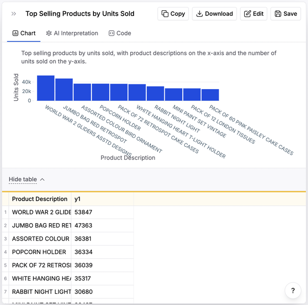

作者：Sergio Pereira
版权所有 © 2025 Goalstat Lda. 保留所有权利。
在美国印刷出版。
由 O’Reilly Media, Inc. 出版，地址：1005 Gravenstein Highway North, Sebastopol, CA 95472。
O’Reilly图书可供教育、商业或销售推广使用。大多数书名也提供在线版本（http://oreilly.com）。如需更多信息，请联系我们的企业/机构销售部门：800-998-9938 或 corporate@oreilly.com。
收购编辑： Louise Corrigan
开发编辑： Sarah Grey
制作编辑： Elizabeth Faerm
文字编辑： 待定
校对： 待定
索引编辑： 待定
内页设计师： David Futato
封面设计师： Karen Montgomery
插画师： Kate Dullea
2025年8月： 第一版
发布详情请参见 http://oreilly.com/catalog/errata.csp?isbn=9781098162276。
O’Reilly标志是O’Reilly Media, Inc.的注册商标。软件开发中的Generative AI、封面图像和相关商业外观均为O’Reilly Media, Inc.的商标。
本作品中表达的观点为作者观点，不代表出版商观点。虽然出版商和作者已善意努力确保本作品中包含的信息和说明准确无误，但出版商和作者对所有错误或遗漏概不负责，包括但不限于因使用或依赖本作品而造成的损害责任。使用本作品中包含的信息和说明需自担风险。如果本作品包含或描述的任何代码示例或其他技术受开源许可证或他人知识产权约束，您有责任确保您的使用符合此类许可证和/或权利。
978-1-098-16221-4
[LSI]
第1章：代码生成和自动补全（已提供）
第2章：用户界面和用户体验设计（已提供）
第3章：Bug检测和代码审查（已提供）
第4章：自动化质量保证（已提供）
第5章：预测分析和性能优化（已提供）
第6章：文档和技术写作（已提供）
第7章：聊天机器人和虚拟助手（已提供）
第8章：实施成功案例（已提供）
通过早期发布电子书，您可以获得处于最早期形式的书籍——作者在写作过程中未经编辑的原始内容——这样您就可以在这些书籍正式发布之前很久就利用这些技术。
这将是最终图书的第1章。请注意GitHub仓库稍后会激活。
如果您想积极参与审查和评论这个草稿，请联系编辑sgrey@oreilly.com。
人工智能可以显著提升代码生成和自动补全的生产力和创造力。本章探讨AI驱动的工具如何重新定义编码体验，将耗时的手动过程转变为交互式、高效且减少错误的工作。
AI在代码生成中的出现不仅仅是为了加快开发者的打字速度；而是要理解他们工作的上下文，建议相关的代码片段，甚至用最少的输入生成复杂的代码块。这些工具由复杂的机器学习算法驱动，能够从公共和私有数据库中的大量代码仓库中学习，持续改进其建议和准确性。
我将研究软件工程师如何从在给定软件开发任务中完成100%的工作转变为AI工具贡献内容的审查者。这需要确保向这些工具提供关于您所需内容的适当输入，并彻底审查输出以确保交付物满足要求。
这些AI工具功能强大且令人印象深刻，很容易陷入在没有适当预防措施的情况下使用其输出的陷阱——例如，在没有验证代码如何以及为什么工作的情况下创建pull request或将代码推送到生产环境。这种粗心的方法带来两个重要风险：
软件工程师和开发人员必须使用AI工具来帮助他们更好、更快地工作，但不是用来取代他们自己的判断，就像我们使用在大多数集成开发环境(IDE)中已变得流行的自动补全功能一样。简单地按下tab键而不是输入每个字符当然很有帮助——但自动补全建议的范围从完全相关到毫无用处。是否使用或丢弃这些建议取决于你的判断。
我在本章中介绍的AI工具需要同样的持续评估。很多时候，这些工具生成的代码会完美地工作并符合任务要求。在其他情况下，它只是部分完成或包含错误、性能问题或其他必须修订的缺陷。使用、丢弃或修订它是你的工作。
本章评述的AI工具主要分为两大类，它们在软件开发中的使用略有不同：
使用这些工具（如ChatGPT），你可以登录并直接在浏览器中与模型交互。你的本地计算机上没有任何活动，只是通过互联网与网站进行交互。这些工具易于使用，能很好地适应更多用例，但它们最大的缺点是有限的上下文窗口。你必须手动输入或复制/粘贴上下文到每次交互的提示中，这在处理大型代码库或文档时是有限制的。
这些工具（如GitHub Copilot）作为插件安装在你在本地计算机上用来编写代码的IDE中。一旦安装，它们就嵌入到你的软件开发体验中，在你编写代码的实际环境中。它们最大的优点是大的上下文窗口：这些工具可以将整个代码库作为每次交互的上下文。
数百万软件工程师正在采用AI工具来支持他们的日常任务。也许这些工具影响开发的五个最突出的用例是：
不是在代码库中输入每个单词和函数，你向AI工具提供代码应该满足的具体要求。它以任何最流行的编程语言（如Java、Python、PHP或Javascript）输出即用代码。这可以加速原型制作以及开发过程。本章描述的工具可以为广泛的应用程序生成代码，包括Web开发、数据分析、自动化脚本或移动应用程序。总的来说，这个用例是AI帮助弥合概念化和实现之间差距并使技术开发更易获得和高效的地方。
这个用例特别有价值，因为调试通常是软件开发中耗时且令人沮丧的部分。这些AI工具分析错误消息和有问题的代码片段，并建议具体的更改或改进。这不仅节省时间，还作为教育工具，随着时间推移增强你的调试技能。此外，一些工具（如ChatGPT）可以解释为什么会出现某些错误，有时甚至解释避免这些错误所隐含的架构权衡。对软件开发中常见陷阱的这种更深层理解是如此多开发人员使用这个工具作为他们编码助手的关键原因。
如果你试图在不熟练的技术栈中快速上手，学习新的编程语言或框架，或了解特定的实现细节（如在MySQL数据库中向表添加索引或从Stripe API提取上个月的交易），AI工具可以作为指导老师。它们可以为广泛的技术提供教程、示例和文档的简洁摘要。与AI工具的这种教育性交互可以加速你的学习进度，无论具体技术或你正在学习的内容范围如何。
许多软件工程师使用AI工具来审查代码并使其更高效、可读和可维护。这包括重构代码、使用更高效的算法或应用性能或安全最佳实践的建议。代码优化是一个持续的挑战，很容易被遗忘。然而，最终所有那些次优代码会堆积成巨大的技术债务，最终需要在大范围内进行重构，因此成本非常高。使用AI工具在任务级别审查代码可以对整个代码库的质量产生重大影响。
文档对于维护和理解软件项目至关重要，但开发人员经常忽视或优先级较低。一些AI工具可以生成文档，包括内联注释和关于函数、类和模块的详细信息。这节省时间，也确保文档与代码库一致更新。通过提供清晰、全面的文档，AI工具有助于提高代码可读性，使团队更容易协作。这个用例在大型团队或开源项目中特别有益，在这些环境中清晰的文档对于使其他开发人员能够有效贡献至关重要。自动化文档还增强了项目的可维护性，促进了开发团队内更好的知识转移。
我评估了50多个AI工具，以便筛选出我在本章中重点介绍的那些。这里涵盖的每个工具都符合以下标准：
它是一个专业项目，背后有一个称职的团队
它生成的代码具有高质量门槛
它免费或以试用方式提供一定水平的功能
在撰写本文时(2024年初)具有很高的采用率
我在本章中的过程如下：我向每个选定的代码工具提交了一个简短的代码挑战，在每个工具上多次运行相同的挑战，并比较它们的输出。然后我给每个工具打分，评分范围从1到10，1分是最差的——出错且完全无法运行的解决方案——10分是完美无瑕的解决方案。5分是能运行但只解决了部分问题的解决方案。我仔细研究每个类别中的顶级产品，详细说明其优缺点，然后提供一些关于亚军的更简洁信息。
同样重要的是要注意，本章描述的所有测试都是在2024年3月运行的。考虑到这些工具和底层模型的快速演变，您在以后的时间对相同提示可能会得到不同的结果。
本章将首先研究基于浏览器的AI工具，然后研究基于IDE的工具。
ChatGPT是由OpenAI开发的人工智能，由其GPT-3.5架构提供支持。将它想象成软件工程师的多功能工具，提供从对话参与到复杂问题解决的广泛功能，远超出我在本特定章节中讨论的特定范围(生成软件代码)。
正如OpenAI网站所述，ChatGPT就像一个高度智能的虚拟助手，理解人类语言的细微差别，能够生成感觉像是由人类编写的文本。它是现代自然语言处理(NLP)技术的一个例子。它在广泛的互联网文本上进行了细致训练，为开发者和非开发者提供了可以利用的广泛知识库。
ChatGPT获得了大规模采用，在2022年11月30日发布后仅2个月就达到了1亿用户，成为有史以来增长最快的产品。当然，这个庞大的用户群包括许多软件工程师。但在我们深入了解之前，重要的是要提及数据安全问题，这导致14家知名科技公司甚至15个国家的政府在早期禁用ChatGPT。他们担心它不符合欧盟通用数据保护条例(GDPR)。这些禁令中的大部分已经被撤销，在撰写本文时(2024年初)，几个公共机构正式开始使用ChatGPT，包括美国宾夕法尼亚州政府和英国司法办公室。
让我们来看看ChatGPT的优缺点，从积极方面开始。请注意，这些也很大程度上适用于大多数类似工具。
现在让我们看看ChatGPT和类似工具的一些缺点：
范围缩小
: ChatGPT有一个有限的上下文窗口，这意味着您可以在提示中包含的文本量通常相当于一个文件的软件代码量。许多bug和问题跨越整个代码库，有时根本原因甚至超出了代码库本身。ChatGPT对于处理如此广泛的挑战并不是很有帮助，因此它不太适合代码库范围的解决方案。它的回复是基于文本的，而不是基于文件的，它的上下文窗口对于输入和输出都是有限的。
: 尽管具有准确性，ChatGPT并不是绝对可靠的。它有时会产生”幻觉”，如错误的代码、编程概念的不准确解释或关于软件功能的虚假声明。再次强调，要以批判性思维对待ChatGPT的输出。根据可信来源（如官方文档、权威论坛或同行评议）验证它提供的代码和任何其他信息的准确性。将ChatGPT视为头脑风暴工具而不是绝对权威。
我要求本章涵盖的每个AI工具生成代码来解决完全相同的挑战，这是一个经典的2维数组问题，我在作为CTO的职业生涯中在许多技术面试中使用过。以下是我提供给ChatGPT GPT-3.5模型的提示（2024年3月）：
生成javascript代码来解决以下挑战。
上下文：
- 我们有一个2D数组，填充了0和1。
- 我们必须找到所有填充了0的矩形的起始点和结束点。
- 给定矩形是分离的并且彼此不接触，但是它们可以接触数组的边界。
- 一个矩形可能只包含一个元素。
期望输出：
- 您应该返回一个数组，每个元素代表一个矩形。
- 这些数组元素中的每一个都包含一个由4个元素组成的数组，这些元素构成矩形（左上X，左上Y，右下X，右下Y）。
示例数组：
input1 = [ [1, 1, 1, 1, 1, 1, 1], [1, 1, 1, 1, 1, 1, 1], [1, 1, 1, 0, 0, 0, 1], [1, 1, 1, 0, 0, 0, 1], [1, 1, 1, 1, 1, 1, 1], [1, 1, 1, 1, 1, 1, 1], [1, 1, 1, 1, 1, 1, 1], [1, 1, 1, 1, 1, 1, 1] ]
input2 = [ [0, 1, 1, 1, 1, 1, 0], [1, 1, 1, 1, 1, 1, 1], [1, 1, 1, 0, 0, 0, 1], [1, 1, 1, 0, 0, 0, 1], [1, 1, 1, 1, 1, 1, 1], [1, 0, 0, 1, 1, 1, 1], [1, 0, 0, 1, 1, 0, 0], [1, 0, 0, 1, 1, 0, 0] ]在不到10秒的时间内，ChatGPT生成了示例1-2中显示的代码。
function findRectangles(input) {
const rectangles = [];
const numRows = input.length;
const numCols = input[0].length;
// 检查单元格是否在边界内并包含零的辅助函数
function isValidCell(row, col) {
return row >= 0 && row < numRows && col >= 0 && col < numCols && input[row][col] === 0;
}
// 执行深度优先搜索以找到矩形中所有单元格的辅助函数
function dfs(row, col, rect) {
if (!isValidCell(row, col)) return;
input[row][col] = 1; // 将单元格标记为已访问
rect[0] = Math.min(rect[0], col); // 更新左上X
rect[1] = Math.min(rect[1], row); // 更新左上Y
rect[2] = Math.max(rect[2], col); // 更新右下X
rect[3] = Math.max(rect[3], row); // 更新右下Y
// 检查相邻单元格
dfs(row + 1, col, rect); // 向下
dfs(row - 1, col, rect); // 向上
dfs(row, col + 1, rect); // 向右
dfs(row, col - 1, rect); // 向左
}
// 遍历每个单元格
for (let i = 0; i < numRows; i++) {
for (let j = 0; j < numCols; j++) {
if (input[i][j] === 0) {
const rectangle = [j, i, j, i]; // 初始化矩形[左上X，左上Y，右下X，右下Y]
dfs(i, j, rectangle); // 执行深度优先搜索以找到矩形中的所有单元格
rectangles.push(rectangle);
}
}
}
return rectangles;
}
// 示例数组
const input1 = [
[1, 1, 1, 1, 1, 1, 1],
[1, 1, 1, 1, 1, 1, 1],
[1, 1, 1, 0, 0, 0, 1],
[1, 1, 1, 0, 0, 0, 1],
[1, 1, 1, 1, 1, 1, 1],
[1, 1, 1, 1, 1, 1, 1],
[1, 1, 1, 1, 1, 1, 1],
[1, 1, 1, 1, 1, 1, 1]
];
const input2 = [
[0, 1, 1, 1, 1, 1, 0],
[1, 1, 1, 1, 1, 1, 1],
[1, 1, 1, 0, 0, 0, 1],
[1, 1, 1, 0, 0, 0, 1],
[1, 1, 1, 1, 1, 1, 1],
[1, 0, 0, 1, 1, 1, 1],
[1, 0, 0, 1, 1, 0, 0],
[1, 0, 0, 1, 1, 0, 0]
];
console.log(findRectangles(input1));
console.log(findRectangles(input2));我将此代码片段复制到计算机上的本地文件中，将其命名为chatgpt.js，然后在终端中运行。结果如示例1-3所示。
sergiopereira@Sergios-MacBook-Pro oreilly_book % node chatgpt.js
[ [ 3, 2, 5, 3 ] ]
[
[ 0, 0, 0, 0 ],
[ 6, 0, 6, 0 ],
[ 3, 2, 5, 3 ],
[ 1, 5, 2, 7 ],
[ 5, 6, 6, 7 ]
]这个输出是完全正确的！此外，生成的代码结构良好，具有粒度化、定义明确的函数和相关注释。
为了充分探索每个工具的边界，我对每个工具尝试了完全相同的提示约10次。ChatGPT每次都生成了新的原创回复——即使对于完全相同的提示也是如此。不仅实际生成的代码发生了变化，它并不总是能正确工作。以下是其答案的分解：
在大多数情况下，它生成了正确的结果（如上所示），尽管在变量名和代码组织方面有一些变化。
两次，它生成了部分结果（例如，只找到每个矩形的左上角而没有找到右下角）。
有一次，它出现了”幻觉”，在数组的每个位置字面上输出”X”和”Y”字符串，而不是进行必要的计算。
由于这些原因，我给ChatGPT在这个编程挑战中打9分（满分10分）。虽然它大部分时候都能生成正确的结果，但不能给满分10分，因为它确实生成了非常不同的解决方案，在某些情况下无法正确解决问题。
Gemini是Google直接与ChatGPT竞争的产品，是其最新和最先进的AI模型，继承了之前的LaMDA和PaLM 2等模型。它在代码生成方面的优缺点与ChatGPT非常相似。让我们在同一个实际示例中比较它们的性能，看看Google Gemini如何解决2D数组挑战。
首先，它的响应时间明显更长。Gemini没有ChatGPT那种节流用户体验（您可以看到回复像有人在打字一样逐步构建）。感觉它只是在处理了将近一整分钟，直到最终产生结果，您可以在本书Github仓库中的google_gemini.js文件中看到完整结果。这个结果如示例1-4所示，是部分正确的。
sergiopereira@Sergios-MacBook-Pro oreilly_book % node google_gemini.js
[ [ 3, 2, 5, 3 ] ]
[ [ 3, 2, 5, 3 ], [ 1, 5, 2, 7 ], [ 5, 6, 6, 7 ] ]Gemini为第一个输入数组返回了正确的解决方案（只有一个矩形，问题范围更简单），但它在第二个输入数组中只找到了5个矩形中的3个。我像使用ChatGPT一样重复了几次实验，但Gemini生成的代码变化比ChatGPT少。它给出的每个解决方案都返回完全相同的输出。
Google Gemini部分失败的原因似乎是它误解了要求，其中写道：“一个矩形可能只包含一个元素。”Gemini的解决方案包含一个验证来排除输出数组中的单个元素，如示例1-5所示。Gemini输出中缺失的两个矩形正是那两个只有一个元素的矩形。
// Check if it's a rectangle (not a single 0)
if (bottomRightX > topLeftX && bottomRightY > topLeftY) {
rectangles.push([topLeftX, topLeftY, bottomRightX, bottomRightY]);
}我给Google Gemini的解决方案打8分（满分10分）。虽然它没有完全生成正确解决挑战的代码，但它确实产生了正确的算法——只是添加了一个违反简介中指导原则的愚蠢验证。这更多是范围理解错误，而不是真正错误的代码解决方案。它生成了一致相似的代码片段，并且从未生成任何幻觉。
我尝试的其他工具都无法解决挑战，有时甚至无法生成可以运行的代码。
接下来，让我们回顾顶级基于IDE的工具，从最佳竞争者开始：GitHub Copilot。
GitHub Copilot是GitHub、OpenAI和Microsoft的合作产物。正如其文档所述：“GitHub Copilot是一个AI配对程序员，帮助您更快地编写代码，减少工作量。它从注释和代码中获取上下文，即时建议单独的行和整个函数。”
事实上，GitHub Copilot比本章回顾的任何其他工具都要早推出：2022年6月，大约比ChatGPT发布早5个月。发布后不久，GitHub声称有20,000个组织在使用Copilot。在撰写本文时（2024年初），这个数字已增长到37,000。2023年10月，Microsoft CEO Satya Nadella声称超过一百万人付费使用Copilot。这也许描绘了该工具使用情况的最准确画面：用户每月至少支付10美元来访问。（截至2024年初，Copilot的免费层仅保留给”经过验证的学生、教师和热门开源项目的维护者”。其他人可以注册30天免费试用。）
虽然GitHub Copilot使用OpenAI的GPT模型，但它使用的是GPT-4（ChatGPT premium版本中提供的版本），同时，训练数据专注于公共GitHub代码仓库、文档和代码注释。到目前为止，这已经引起了一些争议，批评者指控其输出经常逐字复制训练数据中的代码片段。由于其中一些仓库受版权保护，因此针对GitHub的版权侵权诉讼已经提起也就不足为奇了。
当你安装GitHub Copilot时，系统会询问你一些关于希望它在生成的代码中包含哪种类型代码的问题。你可以允许使用训练数据中的任何代码，或对版权和公开可用代码设置限制。我预期在这个法律战线上Copilot（以及大多数其他工具）会有很多发展，特别是随着监管机构界定什么对AI生成是可接受的，什么构成了不可接受的版权侵犯。
现在你有了一些背景，让我们看看GitHub Copilot的优势：
像其他基于IDE的工具一样，Copilot存在于你的IDE中，直接在你正在编码的文件中生成代码。这允许更高级别地集成到软件开发流程中。
与基于浏览器的工具相反，后者需要你将上下文写入或复制到浏览器窗口中，在Copilot和其他基于IDE的工具中，上下文已经存在了。每当用户要求生成任何代码时，它都将整个代码库用作上下文。这使其特别适合生成依赖于同一仓库中不同文件中声明的函数或变量的代码。
那么Copilot的缺点是什么？
如上所述，GitHub Copilot被发现生成了从其训练数据中的仓库逐字复制的代码，在某些情况下这些代码可能受版权保护。使用此类代码可能会给你带来麻烦。
大多数基于浏览器的工具都有许多远远超出仅仅生成代码的通用应用程序。使用这些工具，你可以进行更广泛的研究讨论、头脑风暴实现选项并评估权衡。然而，在GitHub Copilot和其他基于IDE的工具中，这并不太可行。Copilot最近推出了聊天功能，旨在提供与基于浏览器的工具相当的用户体验。
我使用GitHub Copilot解决了与其他所有工具相同的代码挑战。但其用户体验与前面介绍的基于浏览器的工具截然不同。让我带你了解那次体验。
我在我的IDE（Visual Studio Code，VSC）中安装了GitHub Copilot扩展，这就是操作发生的地方。在任何空文件中，Copilot提示我按一个打开其小部件的命令，如图1-1所示。
当我按照指示按⌘ I时，小部件打开（图1-2），我粘贴了与ChatGPT使用的完全相同的提示。
当我按下回车键时，GitHub Copilot开始在IDE内的代码文件中直接生成代码。用户体验与ChatGPT的非常相似，因为当我提交提示时它立即开始编写代码，并以好像有人非常快速地逐行输入的方式呈现代码。两个工具都需要大约10秒来生成完整的解决方案。
现在，有一个重大区别：GitHub Copilot的解决方案是错误的。示例1-6显示了我运行其生成的代码时的控制台输出。
sergiopereira@Sergios-MacBook-Pro oreilly_book % node github_copilot.js
[
[ 3, 2, 5, 3 ],
[ 4, 2, 5, 3 ],
[ 5, 2, 5, 3 ],
[ 3, 3, 5, 3 ],
[ 4, 3, 5, 3 ],
[ 5, 3, 5, 3 ]
]
[
[ 0, 0, 0, 0 ], [ 6, 0, 6, 0 ],
[ 3, 2, 5, 3 ], [ 4, 2, 5, 3 ],
[ 5, 2, 5, 3 ], [ 3, 3, 5, 3 ],
[ 4, 3, 5, 3 ], [ 5, 3, 5, 3 ],
[ 1, 5, 2, 7 ], [ 2, 5, 2, 7 ],
[ 1, 6, 2, 7 ], [ 2, 6, 2, 7 ],
[ 5, 6, 6, 7 ], [ 6, 6, 6, 7 ],
[ 1, 7, 2, 7 ], [ 2, 7, 2, 7 ],
[ 5, 7, 6, 7 ], [ 6, 7, 6, 7 ]
]虽然Copilot的解决方案正确找到了所有矩形的左上角和右下角，但它还将这些都添加到了”rectangles”数组中，就好像每个单独的元素本身都是一个矩形。在将元素标记为左上角然后检查该元素是否已经在现有矩形内部，然后再将其标记为新矩形开始的代码部分中，还缺少逻辑。
所以 GitHub Copilot 的算法基本正确，但缺少了逻辑的关键部分。示例 1-7 展示了它生成的代码，你也可以在本书的 GitHub 仓库中的 github_copilot.js 文件里找到。
function findRectangles(matrix) {
const rectangles = [];
const rows = matrix.length;
const cols = matrix[0].length;
for (let i = 0; i < rows; i++) {
for (let j = 0; j < cols; j++) {
if (matrix[i][j] === 0) {
let topLeftX = j;
let topLeftY = i;
let bottomRightX = j;
let bottomRightY = i;
// Find the bottom right corner of the rectangle
while (bottomRightX + 1 < cols && matrix[i][bottomRightX + 1] === 0) {
bottomRightX++;
}
while (bottomRightY + 1 < rows && matrix[bottomRightY + 1][j] === 0) {
bottomRightY++;
}
rectangles.push([topLeftX, topLeftY, bottomRightX, bottomRightY]);
}
}
}
return rectangles;
}
const input1 = [
[1, 1, 1, 1, 1, 1, 1],
[1, 1, 1, 1, 1, 1, 1],
[1, 1, 1, 0, 0, 0, 1],
[1, 1, 1, 0, 0, 0, 1],
[1, 1, 1, 1, 1, 1, 1],
[1, 1, 1, 1, 1, 1, 1],
[1, 1, 1, 1, 1, 1, 1],
[1, 1, 1, 1, 1, 1, 1]
];
const input2 = [
[0, 1, 1, 1, 1, 1, 0],
[1, 1, 1, 1, 1, 1, 1],
[1, 1, 1, 0, 0, 0, 1],
[1, 1, 1, 0, 0, 0, 1],
[1, 1, 1, 1, 1, 1, 1],
[1, 0, 0, 1, 1, 1, 1],
[1, 0, 0, 1, 1, 0, 0],
[1, 0, 0, 1, 1, 0, 0]
];
const rectangles1 = findRectangles(input1);
const rectangles2 = findRectangles(input2);
console.log(rectangles1);
console.log(rectangles2);基于这些原因，我给 GitHub Copilot 在这个任务上评分 6/10。虽然它的解决方案部分解决了问题，但它在多次尝试中生成的解决方案相当一致，并且从未出现任何幻觉。
在这场 AI 代码生成市场份额的竞争中，CodeWhisperer 是亚马逊的竞争者。它在本章涉及的其他大多数工具之后发布，但已经获得了一些动力，特别是在亚马逊网络服务(AWS)的庞大用户群中。让我们看看它如何处理我们的代码挑战。
sergiopereira@Sergios-MacBook-Pro oreilly_book % node amazon_code_whisperer.js
[ [ 3, 2, 5, 3 ] ]
[
[ 0, 0, 0, 0 ],
[ 6, 0, 6, 0 ],
[ 3, 2, 5, 3 ],
[ 1, 5, 2, 7 ],
[ 5, 6, 6, 7 ]
]如示例 1-8 所示，亚马逊的解决方案返回了正确的结果——在我第六次尝试时。但是，我必须告诉你，Code Whisperer 在本章所有工具中用户体验最为笨拙。
首先，我花了一些时间来找出生成代码所需的确切注释语法。其次，Code Whisperer 生成的幻觉比任何其他工具都多。在生成这个正确结果之前，我尝试了五次，期间它生成了简单的代码注释而没有任何实际代码；会根据未声明变量抛出控制台错误的代码；以及部分解决挑战的解决方案。亚马逊的工具在尝试解决同一问题时的差异范围最广。
基于这些原因，我给 Amazon Code Whisperer 评分 7/10。这个正确输出感觉像是幸运一击，考虑到它在生成正确解决方案之前为完全相同的提示生成的各种无用幻觉。
如果我要选择一个工具来解决像这个 2D 数组挑战这样的算法函数，ChatGPT 会是我的首选：它在大多数情况下都返回了正确的结果。表 1-1 提供了这里评审工具的概览。
| 工具 | 用户体验 | 测试性能 |
|---|---|---|
| ChatGPT | 浏览器 | 9/10 |
| Google Gemini | 浏览器 | 8/10 |
| GitHub Copilot | IDE | 6/10 |
| Amazon Code Whisperer | IDE | 7/10 |
但是，对于更通用的软件开发，通常涉及更广泛的范围和更细致的请求，我可能会使用 GitHub Copilot，因为在我的 IDE 中距离一个代码注释就能使用它很方便。
多年来，我在面试中已经使用了这个示例中的 2D 数组代码挑战几十次。通常，我在一个小时的现场编程面试开始时，给候选人的挑战简介几乎完全如我在这里给出的一样。然后候选人编写解决方案，在工作时大声思考，偶尔搜索 Google 寻求帮助。
在那个小时长的面试中，只有很少的候选人能够解决挑战的全部范围(多个矩形)。大多数编写部分解决方案，只找到一个矩形，或只找到左上角，或一些其他变体。
令人难以置信的是，像 ChatGPT (在这个案例中是 GPT 3.5) 这样的免费工具可以在短短 10 秒内产生与那些顶尖表现者相同的结果。但是，同样重要的是要强调它并不总是产生正确的答案。即使使用这个客观、直接的提示，它也产生了部分解决方案，甚至出现过一次幻觉。
虽然在撰写本书时（2024年初），本章中审查的每一个工具都被认为是代码生成领域的佼佼者，但没有任何一个工具的表现超过ChatGPT。唯一一个生成正确解决方案的其他工具是AWS Code Whisperer，但这只是它在我所有其他尝试中产生的各种错误幻觉中的一次偶然成功。其余的工具要么生成部分解决方案，要么生成无法运行的解决方案。
这里审查的工具中没有一个在所有尝试中都为这个挑战产生了正确的结果，大多数工具甚至完全无法产生正确的解决方案。即使对于那些确实产生了正确结果的工具，我也无法知道它们生成的代码是否受版权保护。再次强调，你必须谨慎行事。
软件工程师日常使用的大多数提示都比这个挑战更复杂或更主观，这会增加这些工具生成错误或误导性结果的可能性。再次强调，在使用这些工具时批判性思维是关键。
大多数软件工程师认为审查ChatGPT对其提示的回复时最重要的部分是确认它是否真正解决了他们的问题。虽然这当然很重要，但我建议遵循一些经验法则。
首先，在将AI生成的代码推送到生产环境或打开拉取请求之前，始终要审查这些代码。让代码真正成为你的，无论其中有多少是由你的工具生成的。其次，测试你的代码。针对覆盖各种情况的测试套件运行代码，从正常路径到边缘情况和错误状态。让所有测试通过是代码满足你要求的可靠确认。最后，虽然我之前已经说过，但务必重新审视你公司对任何用于专业目的的AI工具的指导原则。
通过早期发布电子书，你可以获得最早形式的书籍——作者在写作时原始且未经编辑的内容——这样你就可以在这些标题正式发布之前很久就利用这些技术。
这将是最终书籍的第二章。请注意GitHub仓库稍后会激活。
如果你想积极参与审查和评论这个草稿，请通过sgrey@oreilly.com联系编辑。
软件应用程序的世界依赖于美观的用户界面(UI)和直观的用户体验(UX)。UI设计关注产品的外观以及用户如何在视觉上与其交互，它专注于布局、颜色、按钮、排版以及塑造软件产品视觉体验的一切。另一方面，UX设计关注产品给用户的感受，以及它是否直观和高效易用，UX关注可用性、导航流程，并确保整体体验流畅和用户友好。两者携手合作创造出优秀的软件产品。
在过去几十年中，制作这些界面和体验一直是UI/UX设计师的工作。他们通常与软件工程师配对，实现功能和后端工作流程，将这些设计作为集成体验为全世界的用户带来生机。然而，将这些UI/UX设计转化为功能性前端代码是一个劳动密集型过程。传统上，设计师和工程师密切合作，确保设计的视觉美学准确转换为响应式和交互式用户界面。这个过程通常涉及多次迭代、对细节的细致关注，以及对设计原则和编码标准的深刻理解。
自2022年和2023年文本到图像生成模型出现以来，UI/UX设计经历了巨大的转变。在我写这篇文章的2024年，最新的AI工具现在可以从自然语言描述的想法生成UI设计，并从UI设计生成功能性前端代码。这些工具通过自动化过程的重要部分，正在彻底改变设计到代码的工作流程。这具有巨大的潜力来减少将设计变为现实所需的时间和精力，并使设计专业人员更加高效。AI工具可以显著缩小概念与实现之间的差距。
例如，新应用程序的第一次线框图和草图设计迭代可能需要超过一周的时间来完成——有时甚至超过一个月，这取决于项目的复杂性。新的AI设计生成器可以将线框图时间缩短到不到一天，并使每个反馈循环也更快。这些工具将设计转换为功能性前端代码的能力意味着一个人或团队可以在几分钟内（或几小时，算上迭代）从用自然语言描述一个想法到生成功能性前端代码，而不是几周或几个月。
本章将检视UI设计和UX设计领域的一些领先工具，旨在涵盖两者之间的广泛活动范围。
在本章中，我将专注于两种类型的AI工具：将想法转换为设计的工具和将设计转换为代码的工具。
本部分是对第2章涵盖工具的补充，第2章的工具从自然语言提示生成代码。这里的工具从基于图片的模型图或Figma设计文件生成代码。(如果您不熟悉Figma，它对于UI/UX设计师来说，就像VS Code对软件开发者一样。)
大多数可用的UI/UX设计生成器工具都是完全基于浏览器/云端的。它们使用简单，无需复杂的软件安装，只需要浏览器和URL即可轻松访问。一些工具，如qoqo.ai，作为设计平台如Figma的插件形式提供。
本章涵盖的大多数产品都是最近才推出的（截至2024年中期），正处于产品开发的早期阶段。它们将持续开发，在未来的月份和年份中推出新功能和改进的功能。在我写这篇文章时，这些设计工具在成熟度方面比Github Copilot等软件开发工具落后一到两年。
我预期在UI/UX领域，我们也会看到更多基于浏览器的工具，更多流行设计平台的附加组件或插件，以及更多集成到设计师和前端开发团队之间使用的协作工具中（类似于Git的工具对许多团队来说可能仍然是Figma，但对其他团队来说可能是流行协作工具如JIRA或Notion的插件，我们拭目以待）。
像任何工具一样，本章中的工具都有优点和缺点。一些优点包括：
AI工具可以处理设计文件和组件，并在人类开发者所需时间的一小部分内生成相应的代码。这种快速周转可以加快项目时间表并降低成本。
通过自动化转换过程，AI工具有助于在项目中保持设计元素实现的一致性。
没有技术或设计专业知识的个人可以掌握这些工具并创建功能界面，这种转变有助于UI/UX设计的民主化。
AI生成的代码允许更快的原型制作。设计师和工程师可以快速测试和迭代他们的想法，比以往更快地将新产品推向市场。
本章工具的缺点包括：
AI工具生成的代码并不总是达到人工生成代码的标准。它可能效率较低，更难阅读和维护，所以——正如我在本书中一直强调的——开发者必须在将生成的代码发布到生产环境之前彻底检查和修改。1
AI生成的代码可能无法针对所有浏览器、操作系统和屏幕尺寸进行完全优化。这可能导致响应性和跨设备兼容性问题，需要额外的努力来排除故障和修复。
虽然AI工具可以很好地处理标准设计模式，但它们可能在处理更复杂的自定义设计元素时遇到困难。这极大地限制了创造力和根据特定需求定制设计的能力。因此，仍然需要人类的创造力。
AI工具倾向于产生与现有设计相似的设计。这些工具基于当前设计和主流趋势进行训练，这可能导致缺乏原创性和独特性，一些设计显得通用或重复，无法脱颖而出。虽然AI工具可以提供有用的起点或灵感，但它们远未达到有才华的人类设计师的创造能力。
在利用AI进行自动化和依靠人才保证质量和创造力之间找到正确的平衡，是成功将这些工具集成到设计工作流程中的关键。
UI/UX设计助手工具帮助设计过程的不同部分。它们可以分类如下：
设计创意助手
用户研究和分析工具
调色板和样式生成器
布局和组件生成器
可访问性检查器
个性化引擎
语音用户界面(VUI)设计器
手势和动作设计工具
线框图和原型制作工具
设计到代码转换器
在本章中，我只关注最后两项，它们位于UI和前端代码的交汇处，因此对软件工程师最感兴趣。其他针对UX和产品研究工作流程特定部分的工具通常更特定于设计师和与软件开发者合作较为松散的其他职能，如产品经理、产品分析师和UX研究员。
因此，我使用以下用例来评估本章中的工具：
AI工具可以基于初始输入和设计描述快速生成线框图和原型。这是设计过程的主要部分，设计师在反复迭代中花费大量时间。使用这些工具，创建原型变得更快，设计师可以快速迭代多个设计选项。这种灵活性还可以使A/B测试等复杂流程变得更加易于访问。
AI工具可以在设计原则（如组件、颜色和样式）上进行训练，通过生成符合既定设计系统、品牌标识和指导原则的设计，确保产品不同部分的一致性。这为用户带来了具有统一设计元素和样式的连贯体验。虽然这种”工厂”方法不会促进创造力，但在你只需要创建看起来像现有界面但实现新功能的新屏幕时，它确实带来了重大价值。（诚实地说，无论好坏，大多数软件开发都采用这种”工厂”方法，正如低代码和无代码工具日益普及所证明的那样。）
AI工具可以自动检查和改进UI设计对残障人士的可访问性，确保符合WCAG等标准和包容性设计实践——就像第3章中介绍的软件代码工具一样。这些功能可以识别可访问性问题并建议修复方案，减少所需的人工努力。
AI UI/UX设计工具分析用户行为、需求和偏好数据，根据特定用户群体或个人定制其输出，从而提高参与度、留存率和满意度。通过利用数据驱动的洞察，这些工具确保以用户为中心的设计。这可以大幅扩展现有用例。例如，如果目标是为特定客户群体创建新的着陆页，使用这些工具你可以根据特定参数创建完整的产品变体。没有这些工具，每个产品变体都需要大量的软件开发周期。
AI工具协助为UI元素生成内容，如占位符文本、图像和图标。这可以快速用逼真的内容填充设计，使原型在测试时更加生动，并确保与设计风格和语调的一致性。这使设计师能够专注于流程中更具创造性的方面。
我在本章中的流程如下：我向每个选定的UI设计工具提交了简短的设计提示，在每个工具上运行相同的挑战，并比较它们的输出。我还评估了它们将生成的设计转换为前端HTML CSS、Next.js和React代码的能力。我审查了市场上20多个可用的工具，正如预期的那样，这些工具遵循长尾分布，其中少数几个按广告宣传的那样工作，而其他工具存在各种问题，阻止我运行测试，或者只是提供糟糕的输出。正如在其他章节中发生的那样，AI领域的许多工具都是非常早期的初创公司，其产品处于非常早期的开发阶段。
因此，我选择了在测试用例中提供实际价值的最好的4个工具。然后我以1到10的评分对每个工具进行评级，1分是最差的——一个出错且完全无法运行的解决方案——10分是完美的，5分是不完全符合要求的设计。我仔细观察每个类别中的顶级产品，详细说明其优缺点，然后提供一些关于亚军的更简洁信息。
还需要注意的是，本章描述的所有测试都是在2024年6月运行的。鉴于这些工具和底层模型的快速发展步伐，你在以后的时间对相同提示可能会得到不同的结果。
我要求本章涵盖的每个AI工具为移动食品配送应用程序生成屏幕设计。以下是我提供的详细提示：
创建一个用户友好的食品配送应用程序，允许客户浏览本地餐厅、查看菜单、下订单并实时跟踪配送状态。该应用程序应包括以下屏幕——登录、餐厅和菜单浏览、订单下达和跟踪。
风格：应用程序应该现代简约，专注于易用性和视觉吸引力。设计应采用简洁的布局。加入令人垂涎的食物图像。Uizard有一个营销口号，我相信它为这个领域的大多数其他参与者设定了标准：“忘记无代码，这里有无设计。”代码自动化和设计自动化之间的类比很有意义。正如无代码承诺以一小部分时间和预算提供相同功能，无设计也可能对设计过程产生同等影响。
Uizard产品始于2017年在丹麦哥本哈根的一个名为pix2code的机器学习研究项目。根据Uizard的营销材料：“它允许开发人员使用AI快速轻松地可视化产品想法。这有助于快速推进设计师和软件开发人员的工作流程。其使命是民主化设计，并使各地的非设计师能够构建数字化、交互式产品。”
使用免费计划，你可以为每个项目生成和设计多达5个屏幕，这就是我在测试中使用的。具体来说，我使用了Uizard最先进的AI设计引擎Autodesigner 2.0，于2024年6月发布。该公司将Autodesigner 2.0描述为”文本到UI生成器产品”，“从文本生成模型和线框图”。它”采用ChatGPT直观的对话流程，并将其与Uizard的生成式UI功能和拖放编辑器结合，为你提供直观的UI设计生成器。”
Uizard提供贴士来指导用户完成整个设计流程。非专业人士可以拿起这个工具，在几分钟内创建合理的设计；专业设计师将拥有更多优势。
在提示界面（图2-1），我要求Autodesigner为食品配送应用生成界面，使用了上述实际部分的提示。
图2-2显示了它生成的设计。
您可以在这里查看它生成的所有界面以及交互：https://app.uizard.io/p/97cf063f/preview
以上所有功能都是任何设计师非常典型的工作流程，因此它们被包含在这个产品中并不意外。实现非常直观且易于使用，如图2-3所示的聊天界面。
我给Uizard评分8分（满分10分）。文本到UI设计功能运行得相当好。它的设计带有交互演示、动态过渡和外部分享链接。我没有给更高分是由于设计不一致性，其中一些很难忽视。最明显的是应用名称的不一致：在大多数设计界面中是”FoodieDash”，但在跟踪界面中是”EasyEats”。在输入字段和颜色调色板中也能发现类似的不一致性。
Autodesigner 2.0非常有前景；我期待在未来几个月有大量迭代。Uizard最近还推出了设计到代码功能，在我撰写时的方案中还不可用。Figma插件在我写这篇文章时正处于测试版发布阶段。当这两个功能完全向公众开放时，它们都可能成为游戏规则改变者，无论是对终端到产品的完整性，还是促进这些工具被采纳到现有团队工作流程中。
Galileo AI是一个面向设计师和构建者的提示到UI生成AI工具。其创造者写道，该产品源于他们的核心信念：“AI将增强设计师的创造力和生产力，而不是取代他们。”他们解释说，其目标是构建超越基本自动化的能力，深入创意过程以实际让用户成为更好的设计师。他们旨在去中心化设计，让更广泛的人群更容易接触设计。
Galileo AI在我评估的设计工具中脱颖而出，是最多功能的。它不仅能在几分钟内将自然语言想法转换为UI设计，还允许设计师上传图像作为灵感或重新设计。通过用户提供简洁的提示，它将上传的图像转换为与设计师愿景密切准确匹配的设计。它提供设计师需要的全面功能套件，包括提示到UI、图像到UI和UI到代码功能。这些功能在一个平台中独特地结合在一起，不像其他工具。
将Galileo想象为界面设计的ChatGPT。提示可以是”为遛狗者设计的有趣、友好的应用设计”或”电商网站的仪表板UI”，您将在不到一分钟内得到视觉布局的多个选项，包含适当的UI元素、图像和产品文案。您可以将这些完整的UI界面拉入Figma进行编辑。当我评估这个工具时，设计到代码功能对免费用户可用，这也使它脱颖而出。
我向Galileo AI提供了与给Uizard AI相同的食物配送应用提示词，如图2-4所示，结果非常有趣。生成的设计（见图2-5和图2-6）效果简洁，可以与人类设计师的作品相媲美。
Galileo生成的界面附带相应的HTML代码，如图2-6所示，可以下载使用。
这段代码大约有205行，这只是一个片段。完整代码可以在第二章的GitHub仓库中找到。
我给Galileo AI评分10/10，因为它真的很出色。你可以轻松将设计转移到Figma进行进一步定制和完善。即使生成的HTML代码有时显得笨重，但AI产生的设计和代码比我评估的其他工具都要好。值得注意的是，所有这些功能在免费版本中都可以使用。
作为可能的未来改进方向，当Galileo为设计生成代码时，应该使用大多数前端开发者实际使用的库和框架，如React组件、Tailwind CSS和Bootstrap。增加这些兼容性将使生成的代码更易于使用，在合并到生产仓库时更不容易需要大幅重构。
在这个简短的章节中，我涵盖了UI/UX设计工作流程中UX部分的工具。这意味着用户研究、产品工作流程和可用性。
以下是我用于评估UX工具的提示词：
为一个18-25岁的大学生创建用户画像，该学生试图使用我们的应用程序从餐厅在线订餐。
描述：18-34岁，女性，男性，来自加利福尼亚州洛杉矶的青少年大学本科生成年人，单身，无子女。寻找一个用户友好的平台来快速订餐、跟踪订单和支付。QoQo.ai（发音为”cocoa”）是一个用于UX设计的AI Figma插件，帮助设计师在设计的早期阶段工作。使用qoqo.ai，设计师可以生成UX人物画像、用户旅程映射、网站地图和UX文案。通常执行这些任务的UI/UX设计师、产品经理和产品研究员将通过这个工具节省时间；它还可以让软件工程师更容易完成这些任务，帮助他们更好地与用户互动。
你提供包含人口统计信息的提示词（图2-7），AI在几秒钟内就能生成一个人物画像（图2-8）。
我给Qoqo评分8/10。它能完成工作，而且真的没有学习曲线。它确实感觉像是一个GPT包装器，从某种意义上说，它生成文本并将其放入预定义的框架中，这可以为开始设计软件产品的UI/UX提供巨大价值。
Research Studio是一个AI驱动的应用程序，旨在自动化客户和用户研究分析过程。这个工具对于需要快速将用户访谈转化为可操作洞察、轻松分析满意度并快速生成品牌报告的研究员和设计师特别有用。传统上，UX研究员需要花费数小时梳理大量数据以提取洞察。Research Studio简化了这个过程，使其更快、更高效。
Research Studio的平台允许您在三个开源LLM之间选择：ClaudeAI、Mistral或OpenAI ChatGPT 4o。您上传用户访谈，它会将洞察提取到报告中。它还可以利用从访谈和数据中收集到的信息来编写报告。有几种报告类型可作为输出，如用户流程、功能地图、问题分析等。
为了评估这个工具，我单独使用Claude AI生成了一些原始输入。我要求它为上述虚拟外卖应用生成50个用户调查回复，使用以下提示：
为外卖应用的用户生成50个调查回复，反映他们在使用应用一段时间后的想法。回复应突出正面和负面观点，包括他们面临的任何问题以及可以提高应用效率和用户体验的功能建议。
这些回复包括正面和负面反馈，以及改进建议。以下是其输出中的几个例子：
1. "应用速度快且易于使用。喜欢餐厅的多样性！"
2. "送达时间经常比预估的要长。请提高准确性。"
3. "我希望有提前预订的选项。"
4. "客户服务很棒，遇到问题时总是很有帮助。"我将这些回复传递给Research studio，从调查回复中提取洞察，并要求它基于其内置报告类型编写一份综合报告。
[图2-9]：Research Studio将原始用户评论转化为”洞察”地图。
我给Research Studio评分8分（满分10分），原因与之前的工具相同。虽然它感觉像是一个LLM包装器，但在工作流程方面做得很好，对于想要将大量数据转化为结构化产品洞察并用于下一次软件开发迭代的任何人来说，它确实提供了价值。
在我评估的20多个工具中，包括本测试中的四个工具，Galileo AI成为最佳的文本转UI工具。它能够获取图像并将其重新制作成精美设计的能力也让它脱颖而出。如前所述，这个领域仍处于早期阶段，我只能想象这些工具在未来几年将发展到何种程度。
我评估的UX工具在底层技术方面不那么复杂，但这不是批评：它们在各自的使用场景中工作得足够好。
| 工具 | 目的 | 测试表现 |
|---|---|---|
| Uizard Autodesigner 2.0 | UI生成 | 8/10 |
| Galileo AI | UI和代码生成 | 10/10 |
| QoQo.ai | UX自动化 | 8/10 |
| Research Studio | UX自动化 | 8/10 |
我开始写这一章时抱着错误的期望。考虑到这些工具的新颖性，我期望它们在当前状态下不太有用。我错了。现在我对这个领域以及我们在未来几个月和几年中将看到的软件开发流程演变感到非常兴奋。
从设计生成前端代码，这正是Galileo和该领域其他即将推出的工具所涵盖的确切用例，这个角度无疑最能引起软件工程师的共鸣，特别是从事前端工作的工程师。这是一个游戏规则改变者，将为全球软件工程师节省数百万小时。
其他用例似乎不太面向软件工程师：它们是设计师的工作。但想想看：我们的工具变得更加强大，如果完成相同工作需要的时间更少，软件工程师就可以管理更大比例的设计工作流程。实际上，我们的雇主和团队负责人可能会越来越多地要求我们这样做。这不仅仅是关于全栈而不是前端或后端——它还涉及接触原本由专门设计师或设计团队处理的任务。
软件工程师从未如此被赋予权力来收集产品用户的反馈、将反馈结构化为可操作的洞察、生成改进的设计、将其转换为代码并将新的迭代推向生产。产品迭代周期将因这些工具而显著缩短。掌握这些工具的专业人士将比那些忽视它们的人更接近符合传说中的”10倍开发者”形象。
1 这又是另一个在节省编写代码时间和花费更多时间调试、修复和改进代码之间权衡的例子。从概念上讲，这与2000年代初Dreamweaver生成的HTML代码的权衡，或者最近出现的低代码工具生成的模板化代码（通常难以定制和适应特定需求）的权衡没有太大区别。
对于早期版本电子书，您可以获得最早形式的书籍——作者在写作时的原始和未编辑内容——这样您就可以在这些标题正式发布之前很久就利用这些技术。
这将是最终版本的第3章。请注意GitHub仓库将在稍后激活。
如果您想积极参与审阅和评论此草案，请通过sgrey@oreilly.com联系编辑。
想象一下，一家公司向软件工程师支付最高薪水来开发负责公司收入的产品，却因为生产环境中代价高昂的bug而失去收入。这是任何企业主的噩梦，可悲的是这种情况每天都在发生。软件已经自动化了整个行业，取代了冗长的手动流程，创造了以前不可能实现的新方法。然而，当bug影响基础产品的关键功能时，自动化就无法有效发挥作用。
为了缓解这一根本问题，多年来创造了几个职位来确保适当的质量保证(QA)，如QA工程师、QA分析师和测试工程师等。同时也开发了流程来在bug部署到生产环境之前检测它们。这些流程归结为两个主要类别：
此流程在开发期间进行，包括团队成员在代码被认为准备上线之前相互审查彼此的代码。一些团队要求最少数量的团队成员必须审查并批准拉取请求(PR)才能合并。
此流程在开发完成后进行，作为代码推送到生产环境之前的最后”守门员”。它包括在与生产环境密切匹配的环境中进行的手动或自动化测试。这些测试旨在模拟用户行为，以捕获任何可能在代码审查中遗漏的bug。
当任一流程发现任何bug、性能问题、安全漏洞或其他故障时，代码可以被回退：即，它返回给开发它的软件工程师，并附有包含必须纠正的具体缺陷的评论。
这些流程对任何软件开发团队都至关重要，但它们通常非常冗长且不确定，在没有完全实现避免bug出现在生产环境中的愿景的同时引入瓶颈。因此，随着AI工具的出现，行业非常关注自动化代码审查并使检测bug的过程更快、更确定。成千上万的软件工程团队已经在使用基于AI的自动化代码审查工具。
本章审查的AI工具分为三个主要类别，它们在软件开发中的使用略有不同。审查的一些工具提供多种类型的使用方式。
集成开发环境(IDE)基于的工具直接集成到工程师用于编写代码的软件开发环境中，如Visual Studio Code、IntelliJ IDEA或Eclipse。这些工具在编写代码时提供实时反馈：突出显示错误、建议改进，并直接在IDE中提供文档链接。在这里描述的三种工具类型中，这是唯一一种在代码本地保存时提供反馈的工具。这种即时反馈循环帮助开发人员当场识别和修复问题，提高代码质量并减少后续大量审查的需要。
基于Git的工具与版本控制系统集成，如GitHub、GitLab或Bitbucket，并在Git工作流中运行。与基于IDE的工具不同，基于Git的工具不能被文件的本地保存触发，只能被Git工作流中的操作触发。您可以设置它们在您向仓库推送更改或创建或合并PR时自动审查代码。这些工具根据预定义的规则和指导原则检查代码，可以在代码库的所有分支中执行编码标准。它们通常以PR中的评论或持续集成流水线中的报告形式提供反馈，帮助确保在将更改合并到主分支之前的代码质量。
这些工具可通过网络浏览器访问，通常与GitHub、GitLab和Bitbucket等在线版本控制平台集成。像基于Git的工具一样，它们只能被Git工作流中的更改触发，而不是本地更改。您可以使用这些基于浏览器的工具来获得拉取请求或在线代码合并的自动审查。当您提交PR时，该工具会审查代码中的错误、风格违规和安全漏洞，然后通过浏览器中的Web界面在该PR上提供反馈。我发现这是这里介绍的三种中最不方便的，因为它需要您使用除了您已经熟悉的IDE和版本控制工具之外的另一个平台。
区分linters、静态分析工具和AI驱动的代码分析工具也很重要：
这些是最简单的工具，主要专注于执行编码标准和样式。它们扫描代码以识别语法错误、样式不一致和基本编程错误。像JavaScript的ESLint和Python的Pylint这样的linter被集成到开发环境中，提供实时反馈来纠正缩进、括号位置和行长度等问题。
这些工具更加深入，在不执行代码的情况下分析代码，以检测潜在的bug、安全漏洞和性能问题。这些工具（如SonarQube）理解控制流、数据流和变量作用域，使它们能够识别复杂问题，如内存泄漏和并发问题。它们通常被集成到CI/CD流水线中，帮助在项目间维护代码健康。
这些工具使用机器学习来分析许多项目中的编码模式，识别复杂问题并提出改进建议。AI分析工具，如DeepCode和Codacy，提供上下文感知的建议，可以预测代码更改的影响，提供从大量数据集中学到的优化提示。
在本书和本章的范围内，我将只覆盖最后一种类型的工具——AI驱动的代码分析。
已经在使用AI工具进行自动化代码审查和bug检测的数百万软件工程师发现，它在一系列日常使用案例中带来了明显的好处。这些包括：
: 自动化代码审查工具为软件工程师，特别是初级工程师，提供了一个24/7的结对程序员，它指出bug、提供建议，最重要的是为其建议提供上下文和推理。这是磨练技能的绝佳工具。与团队成员进行的正常代码审查相比，自动化工具的反馈循环更加频繁，这增加了关于特定语言、框架或算法的学习机会的曝光度。这对初级开发者以及转换到新技术栈或首次使用某个框架的工程师特别有益，因为初级水平使错误更加常见。在代码审查中，他们可以通过有助于开发者理解错误并避免下次犯同样错误的消息进行回归。
: 自动化代码审查减少了PR回归的数量。它也极大地减少了从代码编写到审查识别需要修复问题之间的时间。每次更改时的自动代码审查可以指出漏洞和改进，以便开发者可以立即修复它们。这消除了推送有缺陷代码只是为了让其他团队成员发现并回归它的循环——这是一个花费个人开发者时间并延迟将功能发布到生产环境的多次回归循环。
: 很多时候，安全漏洞和性能问题在代码审查中被遗漏，因为它们通常不会影响功能，而功能客观上是任何代码审查的最大焦点。即使被检测到，它们通常也不被视为回归的原因。相反，它们通常进入”最好有”的注释，实际上是将漏洞或问题添加到技术债务堆中。那堆通常会积累很长时间，直到变得不可持续并需要对代码库进行大量重构。
: 本章提到的大多数代码审查工具都专注于安全漏洞，经常指出代码中OWASP十大漏洞的出现，以及解决它们的建议。团队代码审查很少达到这种深度水平；此类漏洞通常只在很久以后（如果有的话）在专业安全审计或渗透测试报告期间被检测到。使用这些工具允许团队更早地检测安全漏洞。
对自动化代码审查工具的一个常见批评是，它们阻碍了（人工）团队成员及时执行代码审查。公平地说，在AI工具出现之前，代码审查在许多团队中就已经是一项令人恐惧的活动。软件工程师经常忘记审查同事的拉取请求，或者留下”lgtm”（“看起来不错”的缩写）的积极审查消息，只是为了解除某个功能部署的阻塞。
AI工具为代码审查过程增加了巨大的即时性。这让软件工程师确信他们的代码具有高质量标准，但也让他们感到审查同事代码的紧迫性降低，认为AI工具已经为他们完成了那项工作。
在我看来，这是一个非常公平的批评。AI代码审查不能替代人工代码审查，特别是由了解功能技术以及其业务和使用案例的高级工程师执行的审查。这是AI代码审查中明显缺失的角度。AI工具错过了被审查代码背后的上下文以及某些代码段背后的意图。这可能导致它提出不相关的建议，或者未能识别对人工审查者来说可能显而易见的上下文特定问题。这是你应该永远不跳过人工代码审查的关键原因，即使你也在使用自动化代码审查。
值得注意的是，用于营销这些自动化代码审查工具的语言与上一章节中审查的代码生成工具有很大不同。本章中很少有工具在其营销文案中大量提及AI（或根本不提），尽管这些产品确实使用了AI算法（如Codacy）。
这有两个原因。其中几个工具在AI最近流行之前就已经在市场上存在多年。然而，许多工具将自己定位为AI生成代码中发现问题的后备保障。例如，Sonar承诺最小化风险、确保代码质量，并从AI和人类创建的代码中获得更多价值。正如网站文案所述：“为了最大化生成式AI在编码中的优势，开发团队需要强大的DevOps流程、报告和指标，这些都专注于代码质量、安全性和可靠性。”
我评估了20多个自动化代码审查工具，以便筛选出本章重点介绍的工具。本章涵盖的每个工具都符合以下标准：
它是一个专业项目，背后有一个称职的团队。
它生成的代码具有高质量标准。
它免费或基于试用提供某种程度的功能。
在撰写时（2024年初）具有高水平的采用度。
为了选择和比较本章的AI工具，我创建了一个简单的Javascript程序，并在代码中引入了四个问题。你可以在本书的Github仓库中查看完整代码，位于名为”[第3章]“的文件夹内。[示例3-1]提供了最相关的代码片段，为了清晰起见，每个问题都有注释。我通过本章审查的每个工具运行了完全相同的代码，并对每个工具提供的结果进行了评论。
app.post('/submit', (req, res) => {
const requestData = req.body;
// 1. SQL注入漏洞
const sqlQuery = `SELECT * FROM users WHERE username = '${requestData.username}'`;
db.all(sqlQuery, [], (err, rows) => {
if (err) {
console.error('Error executing SQL query:', err.message);
res.status(500).send('Error in database operation');
} else {
console.log('Query result:', rows);
res.send('Data processed with SQL query results: ' + JSON.stringify(rows));
}
});
// 2. 跨站脚本攻击(XSS)漏洞
const responseHtml = `
<html>
<body>
<h1>User Profile</h1>
<div>${requestData.userInput}</div> <!-- 用户输入直接渲染到HTML中 -->
</body>
</html>
`;
console.log('Generated HTML for user:', responseHtml);
// 3. 事件监听器中的潜在内存泄漏
const listeners = [];
for (let i = 0; i < 100; i++) {
listeners.push(() => console.log('Event listener', i));
}
console.log('Number of listeners created:', listeners.length);
// 4. 低效循环
let sum = 0;
for (let i = 0; i < 100000; i++) {
sum += i;
}
console.log('Sum of 0 to 99999:', sum);
});
在深入了解之前，这里简要解释了我引入的每个错误以及为什么在代码审查中捕获它们很重要：
这个漏洞是因为在没有任何验证或清理的情况下直接将用户输入纳入SQL查询而产生的。在提供的代码中，变量requestData.username直接连接到SQL查询字符串中。这种方法允许攻击者精心制作用户输入来操纵SQL查询执行未经授权的操作，如访问、修改或删除数据。例如，攻击者可以提供类似' OR '1'='1的用户名输入，这可能改变查询逻辑以返回系统中的所有用户，从而违反数据隐私。
跨站脚本攻击(XSS)发生在应用程序在其网页内容中包含不受信任的数据（通常来自用户输入）而没有适当验证或转义时。在脚本中，requestData.userInput直接包含在发送回客户端的HTML响应结构中。如果此用户输入包含恶意JavaScript代码，浏览器可能会执行该未经授权的脚本，导致会话劫持、个人数据窃取或恶意重定向。
Web应用程序中的内存泄漏可能发生在不再需要的内存没有释放回系统时。在示例中，大量事件监听器在循环中创建但从未删除。每个监听器保留一个可能消耗更多内存的闭包作用域。随着时间的推移，特别是在服务器等长期运行的应用程序中，这些监听器会累积，占用越来越多的内存。这可能导致可用资源耗尽并导致性能下降或崩溃。
示例代码中的循环低效地执行大量迭代来计算从0到99,999的所有整数的总和。每次迭代涉及执行算术运算和更新本地变量。虽然这些操作相对简单，但它们被不必要地重复了很多次。这不仅消耗CPU周期，在Node.js环境中还可能阻塞事件循环，导致处理其他传入请求或操作的延迟。
现在让我们深入了解我试用过的顶级AI代码审查工具。
Codacy 是一家位于葡萄牙的初创公司，于2012年推出了自动化代码审查工具。这款产品多年来发展显著，现在是市场领先的解决方案，利用AI来”帮助开发者识别和修复代码中的问题，提高代码质量并减少技术债务，支持40多种编程语言，与GitHub、Bitbucket和GitLab无缝集成”，正如其网站上的介绍所说。
Codacy的AI分析代码中的潜在错误、样式违规、安全漏洞和性能问题，并为软件工程师提供改进建议。该工具旨在从过去的审查中学习，适应每个开发团队的特定标准和实践。
通过自动化代码审查过程，Codacy帮助开发者更多地专注于构建功能而不是修复问题，最终加速开发周期并增强代码可维护性。
我使用Github账户在Codacy创建了一个账户，并在本章前面展示的代码上运行了它（你可以在本书的Github仓库中查看完整代码）。
Codacy正确识别了第1个问题，即SQL注入漏洞，并将其严重程度标记为”Critical”，这是其排名中的最高级别，如图3-1所示。
Codacy提供了一个可展开的部分，解释了错误是什么、为什么危险以及如何解决（图3-2）。
Codacy还正确识别了问题2，即XSS漏洞，并将其标记为”Medium”严重程度（图3-3和3-4）。
如图3-3所示，Codacy清楚地识别了这个XSS漏洞。
Codacy的分析没有识别出第3和第4个问题，这些问题更多与性能相关而不是安全性。
上述所有反馈都是在我连接Github账户并选择要分析的仓库后立即在Codacy网站上提供的。但是，在我对同一仓库开启PR后，Codacy直接在仓库中执行了第二级分析。
它识别的大多数错误重复了在之前分析中发现的错误，这是我预期的，因为代码是相同的。然而，在Github上，Codacy还为每个问题提供”提交建议”以修复问题，并附有简要解释。这使得软件工程师可以简单地接受建议并一键合并PR，非常方便（图3-5）。
基于以上所有原因，我给Codacy工具打分8/10。它找到了2个安全问题中的2个，但没有找到2个性能问题中的任何一个。对于它确实发现的问题，它提供了非常全面的解释和可以在实际仓库中一键接受的修复建议。
DeepCode 最初是一家位于瑞士苏黎世的独立初创公司，是苏黎世联邦理工学院的衍生公司。1 它于2020年10月被网络安全巨头Snyk收购。从那时起，该产品首先以”DeepCode by Snyk”的名称推广，最近称为”DeepCode AI”，并已集成到Snyk更广泛的产品和服务套件中。
正如Snyk在2020年描述的那样，DeepCode包含”复杂的可解释机器学习语义代码分析。该技术扫描代码的速度比替代方案快10-50倍，能够在开发过程中实现实时工作流程，并使用能够从大量代码中快速学习的自定义机器学习平台，大幅减少误报和漏报。”
DeepCode使用机器学习算法从数百万个公开可用的开源软件开发仓库中学习。这个庞大的数据集使DeepCode能够提供高度准确的建议，并找到人工审查员可能忽略的潜在问题。
DeepCode可以在IDE中使用，也可以直接在Git仓库中使用。它会即时指出安全漏洞，在IDE工具提示中显示为警报，或在仓库的拉取请求中显示为评论。正如该公司网站所说：
它结合了符号和生成式AI、多种机器学习方法，以及顶级安全研究人员的专业知识，提供准确的漏洞检测和技术债务管理。DeepCode AI专为安全而构建，支持11种语言和超过2500万个数据流案例，以高效地发现和修复漏洞。这种AI技术通过提供一键安全修复和全面的应用程序覆盖来提高开发者的生产力，同时通过数百万个开源项目的训练数据确保AI的可信度。DeepCode AI以其使用多个模型和安全特定训练集的混合方法脱颖而出，能够有效保护应用程序安全。
就像我为Codacy所做的那样，我使用Github账户在Snyk/DeepCode创建了一个账户，并在本书仓库中的示例3-1代码上运行了它。
DeepCode正确识别了第1个问题，即SQL注入漏洞，并将其标记为”H”（高），这是其排名系统中的最高级别。它甚至提供了一个分数（图3-6），尽管我无法找到关于这个分数含义的具体信息。这个问题的分数830是我的代码获得的最高分数。
Snyk/DeepCode为每个错误提供两个可展开的部分。一个提供对问题的更深入解释，类似于在浏览器UI中呈现的堆栈跟踪（图3-7）。
第二个可展开的部分建议修复问题的方法（图3-8），并指出要避免使用直接从用户输入参数存储的连接SQL语句字符串。这是防御性编程中的最佳实践。
这些建议”按原样”来自训练数据集中的开源仓库。这在透明度方面非常好，因为软件工程师应该始终想知道代码来自哪里。然而，这在实际修复问题时增加了一些额外的认知负担，因为这只是一个建议解决方案来帮助软件开发者修复问题，而不是一个可以通过单击按钮采用的实际建议解决方案。
尽管对第1个问题提供了如此深入的细节，DeepCode没有发现第2、3或4个问题。它确实在我使用的一些库中（在node_modules内部）发现了一些低严重性的问题，但这些与本书的练习无关。
我给DeepCode打6/10分。它发现了两个安全问题中的一个，但没有发现任何性能问题。对于它发现的问题，它提供了非常全面的解释；然而，与Codacy和CodeRabbit提供的帮助相比，它为每个问题提供的帮助有所不足。Snyk提供了关于问题的信息，但没有提供容易通过一键采用的建议解决方案。
CodeRabbit是一个于2023年9月推出的自动化代码审查平台，正值生成式AI热潮期间。它很快获得了显著的受欢迎程度，特别是在Twitter/X上，因为一些技术影响者对该产品进行了深入评审并在其网络中推广它（示例）。在撰写本文时（2024年初），官方用户数量尚未公开披露。
CodeRabbit利用AI能力来提高代码审查的质量、性能和效率。它通过仓库中的评论提供代码建议。
与我对其他工具的做法一样，我创建了一个 CodeRabbit 账户，允许它访问我的 Github 账户，并选择了我想要授权的仓库。与 Codacy 和 DeepCode 不同，CodeRabbit 不会静态分析已经存在于仓库中的代码。相反，我需要打开一个 pull request；然后 CodeRabbit 会在该 PR 上发布评论，包含其代码审查项目和建议。CodeRabbit 将此宣传为一个更具互动性的工具，旨在模仿团队成员在 Github 上打开 PR 后几秒钟内就发表评论的行为。然而，我在 CodeRabbit 网站上的体验远不如在这里分析的竞争对手。
CodeRabbit 正确识别了问题 1，即 SQL 注入漏洞（图 3-9）。它没有提供任何严重程度级别的指示：所有报告的问题在这方面看起来都一样。它在指出有问题的代码片段方面做得很好，并提供了关于为什么包含漏洞的简要解释。我相信大多数软件工程师会喜欢这个简单的 UI，因为这正是他们从审查 PR 的人类同事那里得到的交互类型。
除了解释之外，CodeRabbit 还提供了一个名为”可提交建议”的可展开部分，其中包含对问题的建议修复（图 3-10）。虽然 CodeRabbit 显示了一个明显的警告，要求彻底审查所提供的解决方案，但提交它只需要方便地点击一下。
CodeRabbit 还发现了问题 2，XSS 漏洞。它提供了一个非常简单的解释，说明为什么这是一个问题，但没有建议解决方案，如图 3-11所示。
就像分析的其他工具一样，CodeRabbit 没有发现性能问题 3 和 4。
因此，我给 CodeRabbit 评分 7/10。它发现了两个安全问题，但没有发现任何性能问题。它还为发现的一个问题提出了解决方案，但对另一个问题没有。然而，与其他两个工具相比，它对问题的解释非常肤浅。最后，它缺少网站界面，无法让用户更深入地检查问题并提供代码库变更和改进的历史视角，而其他工具都有这个功能。
这三个 AI 代码审查工具采用不同的方法来阻止我的 pull request 被合并，如图 3-12所示：
Codacy 阻止 PR 合并，直到我修复它们识别的问题（公平地说，我可以使用它们建议的修复来做到这一点）。
Snyk/Deepcode 尽管发现了问题，但不阻止 PR 合并。
CodeRabbit 只发布评论；它不运行实际检查，因此无论发现什么问题都不会阻止 PR 合并。
如果我要选择一个工具，Codacy 将是我的首选工具。如表 3-1所示，它的得分最高。
| 工具 | 用户体验 | 测试性能 |
|---|---|---|
| Codacy | 浏览器 + 仓库 | 8/10 |
| Snyk/DeepCode | 浏览器 + 仓库 | 6/10 |
| CodeRabbit | 仓库 | 7/10 |
表 3-1. AI 代码审查工具概览。
多年来，代码审查一直是我软件开发团队中最大的挫败感之一。人们天生更倾向于接受分配给他们的新任务，而不是停下自己的工作线程去审查同事的 PR。这种默认行为延误了功能转移到 QA 并最终上线。它还创造了一些情况，我们快速跟踪一些紧急功能，即使代码审查水平不够理想，导致错误出现在生产环境中。
总的来说，这些常见代码审查挫败感的最大受害者是团队士气，团队成员感觉他们不断地在切换上下文并失去专注力。
早在最近的生成式 AI 炒作之前，我就开始在我的团队中使用几种形式的自动化代码审查，如 linter、静态代码分析和测试覆盖率仪表板。任何具有健壮工程标准的团队可能都做过同样的事情。
然而，在行业工作15年后，我可以看出最近这波进化浪潮为这些工具增添了更多深度——特别是它们与你的软件开发工作流程无缝集成的方式，以及一键接受建议修复的选项。拥有一个非常能干的代码审查员，全天候24小时为你的代码问题提供深思熟虑的反馈，对任何人来说都是巨大的帮助。这是我刚开始作为软件工程师时只能梦想的事情。
然而，我相信软件工程师应该首先将这些工具作为学习机会来利用。正如这些工具在非常显眼的警告中自己指出的那样，它们可能会犯错误，而且确实会犯错误，我只能强调这一点。始终让人类来审查和测试建议的修复。与代码生成工具一样，我建议在审查这些工具建议的任何代码或修复时保持高度谨慎。在你打开PR或合并到master之前，一定要让它成为你自己的代码。
1 本书作者在DeepCode公司被Snyk收购之前是DeepCode团队的一员，但在写作时与DeepCode没有合同关系、股权或任何其他既得利益。
通过早期发布电子书，你可以获得最早形式的书籍——作者在写作过程中的原始和未编辑内容——这样你就可以在这些标题正式发布之前很长时间就利用这些技术。
这将是最终书籍的第4章。请注意GitHub仓库稍后会激活。
如果你想积极参与审查和评论这个草稿，请联系编辑：sgrey@oreilly.com。
测试和质量保证(QA)通常是新软件代码在生产环境部署之前必须通过的最后关卡。它们的最终目标是找到可能通过代码审查(如前一章所述)的昂贵bugs或其他突出问题，避免将它们投入生产环境。
QA过程发生在代码被开发、审查和接受合并到代码库之后。测试和QA作为概念之间偶尔会有混淆，可能是因为传统上参与其中的利益相关者在不同公司被称为测试工程师或QA工程师。不过，无论职位如何，他们通常都负责本章涵盖的过程。
通常，QA过程包括在接近生产环境并模拟用户行为的环境中进行手动和/或自动化测试，以捕捉任何逃过代码审查过程的bugs。
当在测试/QA期间发现此类bugs时，功能会回退到开发状态。负责实现的原始软件工程师必须修复问题，然后再次将功能推送到审查和QA。这些回归循环旨在保证最终部署到生产环境的代码确实是无bug的。
这些过程对任何软件开发团队都至关重要。我们可以分为两大类：自动化和手动。
自动化测试使用专门的软件工具对应用程序执行预先编写的测试脚本。这种方法对重复性和回归测试非常高效，因为它减少了验证新代码更改所需的时间。自动化确保了一致性和精确性，最小化了人为错误的风险，并能够实现广泛的测试覆盖。自动化测试可以全天候运行，提供快速反馈，并允许持续集成和持续交付(CI/CD)流水线。虽然最初设置自动化测试需要努力，维护它们也需要工作，但长期好处包括更快的发布周期、改进的准确性以及快速检测和解决缺陷的能力。
在手动测试中，人类测试人员在没有自动化工具辅助的情况下细致地执行测试用例。他们模拟最终用户行为来识别缺陷，确保软件在真实世界场景中按预期行为。这种方法允许细致入微的理解和适应性，经常捕捉自动化脚本可能错过的问题，如用户界面故障和可用性问题。虽然手动测试可能耗时且劳动密集，但它对探索性测试仍然至关重要，在这种测试中，创造性和直觉对发现意外bugs和确保无缝用户体验至关重要。
QA本质上是一个细致、仔细的过程，这往往使它成为延迟功能上线的瓶颈。因此，存在一个AI工具市场，提议加速这个过程的不同部分。本章将特别关注其中两个工具。
AI正在改变自动化测试的每个方面。例如，直到最近，自动化测试还涉及编写复杂的脚本。然而，现在许多自动化测试工具提供了无需编写一行代码即可创建测试的方法。使用简单的纯英语，你可以创建自动化测试来检查软件应用程序中的每个组件和功能。视觉测试也通过AI驱动的工具得到了简化，这些工具自动检测视觉bugs，确保你的用户界面看起来和工作符合预期。这些改进使测试过程更加有效和高效，允许测试人员专注于提高软件的整体质量。
除了自动化/手动划分之外，我们还可以根据AI工具在测试生命周期中针对的具体领域，将软件测试和质量保证的AI工具分类为功能性和非功能性。
顾名思义，功能性测试工具验证软件应用程序是否准确执行其所有预期功能。这些工具专注于系统做什么。它们的目标是测试应用程序的内部组件是否提供预期的输出。功能性测试工具处理单元测试、集成测试、视觉测试、回归测试和冒烟测试等。
非功能性AI测试工具评估软件功能行为之外的方面，如性能、兼容性、可用性、安全性和可靠性。这些工具专注于评估软件的性能而非其行为。它们测量速度、响应时间和资源利用率等。
两个类别的工具都旨在识别潜在的性能问题和安全漏洞。它们使用基于客户使用数据、内部公司文档，甚至行业监管规范或标准训练的深度学习模型。这些算法可以学会识别可能表明性能瓶颈或安全风险的模式。这种基础的”智能”使这些AI工具成为软件开发生命周期QA阶段中人类的重要伙伴。使用这些工具获得的最大收益是它们可以近乎实时地将其内在的测试敏锐度应用于大型代码库。
常见的困扰是QA需要很长时间，因为复杂的产品和庞大的代码库通常有数百个不同的用户旅程需要测试，手动完成需要很长时间。自动化工具并不会降低人工参与的价值，但它们确实可以自动化大部分重复性工作，释放人力QA专业人员专注于关键流程、最近pull request中更改的流程，或构成80%影响力的20%工作（按照帕累托原理，这在软件开发中经常使用）。
我在本章评估的许多主要工具结合了功能性和非功能性测试能力，因为它们旨在集成到各种开发环境中。这些工具可以根据每个团队的环境和偏好以不同方式使用。
例如，测试是CI/CD过程中最重要的方面之一。由于CI/CD集成测试工具，我们现在在开发过程中持续进行测试，而不是等到开发完成后。这种持续集成方法提供有关软件性能和内部功能的实时反馈。
CI/CD集成AI测试工具在每次构建后自动测试代码更改。持续测试确保在开发周期早期识别和解决问题，减少生产环境中缺陷的风险。这种方法促进质量文化，允许更快、更可靠的软件发布。
相比之下，浏览器和基于云的工具在Web浏览器或云中运行测试，提供灵活性和可访问性。它们允许在不同设备和环境上进行测试，无需像IDE和CI/CD集成工具那样的复杂设置。
各行业的软件开发人员和工程团队正在将AI测试和QA工具集成到他们的流程中。以下是我们看到的一些主要用例：
构建测试自动化过去非常缓慢且耗时。设计和编写测试脚本、运行回归测试以及处理其间的所有事务需要大量时间和精力。这正是许多AI驱动的测试工具旨在帮助解决的问题，通过在几秒钟内从普通英语提示生成全面的测试脚本。这种自然语言处理(NLP)脚本编写方法使自动化复杂工作流程变得容易。这反过来使技术和非技术利益相关者都能访问测试。AI生成的测试脚本通常基于用户行为和先前测试数据中的现有模式，这使得测试更相关，更接近人工QA测试人员会创建的内容。
提高准确性意味着更少的代码错误会通过QA阶段进入生产环境。AI算法的超能力是，与手动测试人员不同，它们可以大规模捕获模式和异常。在广泛的代码库和过去的测试数据上进行训练有助于它们更好地发现可能表明需要回归功能的问题的细微差别。
具有自愈能力的AI测试工具在应用程序UI或代码的更改导致测试失败时，自动检测和修复测试脚本中的问题。这确保所有测试保持功能性和最新状态，无需手动干预。从历史上看，更新是QA团队面临的最大挑战之一，因为UI的更改会导致需要更改过去编写的许多测试。这些AI工具可以显著减少QA团队的维护负担，使QA过程更快、更可靠。
通过使用AI测试工具自动化重复性任务，我们可以将软件应用程序的发布周期加速十倍。开发人员可以将更多时间集中在创新新功能和增强产品上，而不是整天试图捕获错误或编写测试脚本。公司也可以更快地响应市场需求和用户反馈。
重要的是要记住，虽然这些AI工具在捕获最终会破坏生产的问题和错误方面表现出色，但人类的直觉在测试过程中仍然至关重要。这不仅仅是因为这里评估的工具或其底层AI算法的局限性，还超越了这一点。软件开发团队不会以绝对完美的方式编写100%的需求和边界用例。
我可以根据自己领导软件团队十多年的经验来说：总是会有基于最后一刻用户反馈、销售部门临时请求，甚至CEO电话提出的特定异常情况的变更和注意事项。虽然团队努力正确记录所有需求，并在软件开发任务描述中捕获边界用例和测试计划，但结果从来不是完美的。总会有差距。而这些是AI工具训练所依据的书面材料，它们将项目需求作为测试的最终指令，最终会错过这些需求的一些细微之处或临时异常。
甚至超越这一点，坦率地说，通常只有人类才能拥有特定的上下文感知能力。我们需要人类来适应行业范围的事件或敏感的用户关切。软件开发是一个复杂的问题，产品和代码库越广泛，纯AI驱动的QA过程就越有可能显示其局限性和差距。
AI算法的效果只能和训练它们的数据一样好。它们绝对可以提供很大帮助，正如本章所示——特别是在重复性的基础工作方面，比如测试广泛的用户旅程和应用程序流程列表。但是在过程的关键部分，仍然需要人工监控、审查和干预。
QA自动化领域的大多数公司都面向企业客户。这是有道理的，因为企业公司往往拥有更大的团队、更广泛的产品和更高的质量控制标准。虽然这完全正常且符合预期，但它影响了我在这里展示工具的选择过程，因为我优先选择可以通过简单的自助注册过程访问并提供免费试用的工具。这是一个刻意的选择，旨在让读者更容易对他们在这里阅读的内容采取行动，尽管这确实排除了一些需要我与其销售团队商谈价格套餐的工具。我认为这些工具超出了本书的范围。
即使有这样的限制，在研究本章时，我审查了20多种自动化测试工具（其中许多属于企业销售类别）。我缩小了范围，选出了下面重点介绍的两个工具。
为了评估和比较本章的AI驱动测试工具，我将每个工具应用于为一个简单、直接的测试站点编写和运行测试用例：一个用于预约医生的简单网络应用程序。由于开发一个全面的端到端自动化测试框架是一项重大任务，我专注于评估这些测试工具提供的特定AI功能，以展示它们将AI集成到软件测试中的潜力。
本书中的示例并不打算代表完整的测试框架，而是演示如何在自动化测试工具中使用AI集成功能。本章的主要目标是展示AI在软件测试领域的可能性和简单性，而不是提供生产就绪的解决方案。
我评估了这些工具中的AI功能如何增强测试过程的各个方面，例如生成测试用例、创建测试数据、执行测试和分析结果。
具有登录页面的网络应用程序，用于预约医生。
在医疗服务网站上自动化一系列操作。此测试确保患者可以导航并成功预约与医生的会面。我们想看看应用程序上的一切是否按预期工作。
我们打算生成/创建测试用例来评估是否自动
登录页面完美工作
如果所有必填字段都已更新，用户可以成功预约
预约历史记录每次预约
导航到https://katalon-demo-cura.herokuapp.com/。
点击Make Appointment按钮。
在用户名字段中设置文本John Doe。
在密码字段中设置加密文本。
点击登录按钮。
检查用户在输入正确详细信息时是否可以成功登录
在预约页面
选择访问日期。
选择Medicare选项。
选择医院再次入院选项。
在文本区域输入评论。
预约。
检查用户在提交包含所有正确详细信息的预约表格后10秒内是否可以成功预约。
切换菜单。
通过点击History访问历史页面。
确认刚刚预约的预约出现在历史中。
现在，让我们来看看我发现的表现最佳的AI测试工具，看看它们如何遵循这些指令并使用其人工智能功能评估网站。
Katalon Studio是由Katalon Inc.于2015年推出的自动化软件QA工具，支持移动应用、Web应用、桌面应用和API的测试。该公司的官方网站强调其”在整个平台中嵌入了AI，以更快地测试、更清晰地查看、并通过更少的瓶颈来简化测试自动化”。
Katalon Studio是Katalon生态系统中的第一个工具。此后，又增加了两个额外的工具。Katalon Recorder是一个浏览器自动化扩展，用于创建和运行Firefox、Edge和Chrome测试。Katalon TestOps是一个测试编排平台，集中了测试规划和管理活动，简化了DevOps流程并增强了跨团队协作。
Katalon中的AI增强测试功能包括：
从简单的英语指令生成Groovy代码（Groovy是在Katalon中编写测试用例时使用的脚本语言）
基于提示自动生成测试脚本
Virtual Data Analyst功能，分析所有TestOps数据并生成报告
自愈能力
如上所述，Katalon的自愈AI会自动帮助您修复在运行期间失效的测试。当您发布新功能或更改组件时，不必手动维护现有的测试脚本。回归测试计划也会自动处理：AI引擎会立即重新运行现有的功能和非功能测试，以确保即使在添加新更改后，软件之前开发和测试的组件仍能正确执行。
传统上，要在Katalon中创建测试用例，您可以录制测试并回放或使用Groovy编写测试脚本。
在这个例子中，我使用了StudioAssist AI，这是Katalon的生成式AI，帮助程序员从纯文本提示编写测试用例。我用它为上述网站编写测试用例。为了这个测试，我扮演了一个不了解Groovy语法的利益相关者。我在Katalon中使用了StudioAssist AI功能来生成Groovy脚本，这设置了我的测试。我在提示中写下了想要的测试，它为我创建了Groovy测试脚本，然后我运行它来评估软件。StudioAssist还帮助解释它生成的每行代码的作用。
我创建了一个新的测试项目，设置了一个测试文件夹，并导航到脚本选项卡开始编写测试。以下是我给StudioAssist AI的提示：
提示：
I want to write a test case performing the following steps:
1. Open the browser to https://katalon-demo-cura.herokuapp.com/
2. Click the make appointment button named 'Page_CuraHomepage/btn_MakeAppointment'
3. Fill username in the 'Page_Login/txt_Username' object with the value in the 'Username' variable
4. Fill the password in the Page_Login/txt_Password' object with the value in the 'Password' variable
5. Verify that the appointment div 'Page_CuraAppointment/div_Appointment' exists within 10 seconds.
6. Close the browser Katalon StudioAssist生成了用正确Groovy语法编写的测试用例（完整内容见示例4-1），运行时执行了测试脚本（见图4-1和图4-2）。
/* I want to write a Katalon Studio test case to perform the following steps.
* 1. Open browser to the URL 'https://katalon-demo-cura.herokuapp.com/'
* 2. Click the make appointment button
* 3. Fill in the username and password fields based on the variables
* 4. Click the login button
* 5. Verify that the appointment div exists
* 6. Close the browser
* */
// Open browser to the URL 'https://katalon-demo-cura.herokuapp.com/'
WebUI.openBrowser('https://katalon-demo-cura.herokuapp.com/')
// Click the make appointment button
WebUI.click(findTestObject('Page_CURA Healthcare Service/a_Make Appointment'))
// Fill in the username and password fields based on the variables
WebUI.setText(findTestObject('Page_CURA Healthcare Service/input_Username_username'), 'John Doe')
WebUI.setText(findTestObject('Page_CURA Healthcare Service/input_Password_password'), 'ThisIsNotAPassword')
// Click the login button
WebUI.click(findTestObject('Page_CURA Healthcare Service/button_Login'))
// Verify that the appointment div exists
WebUI.verifyElementPresent(findTestObject('Page_CURA Healthcare Service/div_Appointment'))
// Close the browser
WebUI.closeBrowser()如您所见，生成的测试满足了我提供的指令，并且代码以正确的语法编写。
StudioAssist 对于非技术用户来说易于使用和调试，因为它将自然语言提示转换为正确的 Groovy 测试语法。
内置关键字和模板加快了测试创建过程，减少了大量编码的需求。
其自愈能力在应用程序UI发生变化时自动更新测试脚本。
StudioAssist 与流行的 CI/CD 工具和测试框架如 Jenkins、Git 和 JIRA 集成。
Katalon 需要您下载并安装 StudioAssist（如上面的截图所示）。这增加了一些额外的设置工作。
Katalon 有时可能很慢，特别是在处理大型测试套件或复杂测试场景时。
Katalon StudioAssist UI 有一定的学习曲线。一些选项隐藏在顶部栏的级联选项中，您需要学习键盘快捷键。
我给 Katalon 评分 9 分（满分 10 分）。它在从纯英语文本提示编写测试并在同一UI中对我想要测试的应用程序执行测试方面帮助很大。我不会给它打 10/10 分的唯一原因是上面缺点中指出的学习曲线。它确实可以更直观，尽管这对于复杂的企业产品来说是相当典型的用户体验，而 Katalon 已经是这样的产品。
现在让我们转向第二个工具。
TestRigor 是一个 AI 驱动的自动化工具，旨在简化软件测试。与传统测试工具不同，TestRigor 允许开发人员在不编写代码的情况下创建和执行测试。其自然语言处理(NLP)能力允许您用纯英语描述应用程序功能。AI 然后生成、执行和报告测试用例，显著减少了全面软件测试所需的时间和技术专业知识。
在我对 TestRigor 的评估中，一个真正突出的功能是其完全无代码的测试创建过程。我不必编写一行测试代码。相反，我提供了测试站点 URL 和应用程序的简要描述以及它应该如何运行。我还提供了测试目标并指定了要生成的测试用例数量。AI 处理了一切，从生成测试到执行测试再到生成详细的测试报告。
正如您可能记得的，测试的目标是检查用户是否可以在 10 秒内登录并成功预约。
TestRigor 使用行为驱动测试用例创建，允许基于用户与应用程序交互的方式创建测试。这绕过了测试语法的技术细节，可以减少非技术用户或小团队的流失。
TestRigor 的测试产品非常易于访问，这使其从众多产品中脱颖而出。它完全基于云，消除了安装额外软件的需要（与 Katalon 不同）。这使得从任何地方都易于访问和使用。
它与流行的 CI/CD 管道如 Jenkins 和 CircleCI 集成，支持 JIRA 等缺陷跟踪工具，这使得与团队已经使用的工具无缝集成。
自愈功能与 Katalon 类似，在现有应用程序工作流程发生变化时减少了测试团队的维护负担。
绕过实际的测试编写对较小的团队和偶尔使用的用户来说很好，但我怀疑对于已经有大型测试基础设施的大型团队来说是否实用。对于那些软件团队（占大多数），自动化测试的价值在于生成正确语法的测试。
这种绕过的连锁缺点是 TestRigor 不能提供与传统测试语言和框架相同的灵活性和控制。它不适合复杂的测试场景或广泛的应用程序工作流程。
由于这些限制，我给 TestRigor 评分 7 分（满分 10 分）。除此之外，它是一个”开箱即用”的出色用户体验，非常适合没有复杂测试基础设施的小团队，或者测试需求偶尔出现且只想检查产品是否按要求工作的团队。
Katalon 和 TestRigor 都有满足不同测试需求的优势，尽管两者都利用 AI 和机器学习来增强其功能。表 3-1 提供了比较。
Katalon提供了一套强大的功能，专门用于处理复杂的测试场景。它特别适用于需要全面测试覆盖的大规模测试项目，在大多数软件开发团队中，通常已经具备了测试基础设施、团队和既定流程。虽然学习曲线比TestRigor更陡峭，但Katalon功能的深度和处理各种测试需求的灵活性使其成为更广泛软件开发团队的强大工具，特别是大型团队或从事复杂产品开发的团队。
TestRigor的简洁和易用性给我留下了深刻印象。学习曲线非常短，我发现从注册到获得实际测试结果的速度快得惊人。这个工具在产品功能经常变化、需要快速持续测试的环境中表现出色。我认为TestRigor最适合初创团队或没有现有测试基础设施、产品需求变化频繁到无法建立强大测试环境的偶尔使用者。另一方面，对于Katalon擅长的领域——即大型团队和更复杂的产品工作流程，TestRigor存在局限性。
| Tool | UX | Test performance |
|---|---|---|
| Katalon | Repository | 9/10 |
| testRigor | Browser | 7/10 |
在本章分析的工具中，Katalon成为大型团队和企业产品的良好选择，而TestRigor则证明是初创公司和副产品的赢家。这很好地覆盖了软件开发市场，展示了拥有不同类型产品和成熟度水平的团队如何从使用AI测试工具中受益。
如果你曾经从事软件测试或QA工作，或者只是为编写的代码写过单元测试，你就会知道编写测试并在应用程序不断发展和扩展时保持更新是多么费力的工作。
我经常参与预算规划和路线图讨论，在这些讨论中，强大的测试被推迟，或者过时的测试被简单地定义为应该逐步淘汰的技术债务。技术和非技术利益相关者对适当测试实践持有偏见是非常常见的，其中一个关键原因是历史上这需要大量投资。
这就是AI测试工具可以带来的主要价值所在。在软件开发中，我们不断寻找帕累托原则的应用：“什么是能够产生这个路线图项目80%价值的20%努力？”作为CTO，我多次参与这些讨论的中心。在QA中，创造80%价值的20%努力是关于正确定义应用程序工作流程；与用户和客户讨论问题和边缘情况；额外努力为将实施需求的软件开发人员映射细节差异；最终，在上线前作为最后把关者进行用户验收测试。
另外80%的努力，创造20%的价值，是编写和执行每个测试以验证代码是否满足需求的实际繁重工作。AI工具在这方面表现出色。能够用自然语言提供指令并获得以适当语法编写的测试，准备好执行，这是一个巨大的节省时间的用例。当应用程序代码发生变化时，具有自愈能力来更新测试是一个很好的后备方案，防止测试过时而被简单注释掉，因为出现了紧急优先事项需要发布到生产环境。
这些是经常将适当软件测试降级为次要优先级的日常决策。AI工具可以帮助缓解这些担忧，并有助于确保在生产环境中运行的软件经过适当测试且无bug。这不能仅靠AI工具单独完成，因为这些工具不会取代人类。恰恰相反：QA中的人类任务至关重要，因为它们定义了测试范围，并为AI工具以高质量标准完成繁重工作提供了关键指导。
再次强调，“AI+人类”的组合导致一个存在数十年的经常令人沮丧的过程产生更高质量的输出。
通过早期发布电子书，你可以获得最早形式的书籍——作者在写作时的原始和未编辑内容——这样你就可以在这些标题正式发布之前很久就利用这些技术。
这将是最终书籍的第5章。请注意GitHub存储库将稍后激活。
如果你想积极参与审查和评论这个草稿，请联系编辑：sgrey@oreilly.com。
在当今软件驱动的世界中，企业从其应用程序、用户和运营中产生大量数据。这些数据蕴含着宝贵的洞察，可用于决策、预测趋势和改善系统性能。分析和利用这些数据的能力已成为软件工程师的关键技能。
在本章中，我将深入探讨数据分析和商业智能，测试最先进的AI工具如何帮助企业理解其数据并改善结果。无论是预测未来用户行为还是优化资源使用，数据分析都开辟了新的可能性。本章将涵盖三个关键角度：
这些工具承诺的第一点是用户可以通过自然语言提问来查询大型数据集，这看起来很有吸引力，因为公司在数据库上构建可视化仪表板的成本很高。
公司通常希望关联数据点并发现模式，以了解用户行为或发现流程中的故障，这远远超出了简单查询数据来计数和汇总字段的范围。同样，此类项目的成本阻止了许多公司涉足这一领域，因此AI工具消除这一障碍的承诺是巨大的。
数据科学和商业智能的终极承诺是获取过去发生的数据，并用它来得出关于近期未来将会发生什么的结论。这种预测对于做得好的企业来说可能是游戏规则的改变者，那些开发并将其作为决策过程关键部分的公司将这些项目和算法视为敏感的知识产权。
这些角度展示了软件工程师和数据分析师如何将原始数据转化为可操作的洞察，以帮助团队做出更明智的决策。它们也显示了历史上这些项目是多么昂贵和耗时。高成本和复杂性将这些领域的复杂项目限制在有资金和技术能力团队的公司。大多数中小企业、初创公司和非技术企业在开发此类工具方面面临很高的障碍，这阻碍了它们在全球市场中的竞争能力。AI工具在这一领域的承诺是在所有市场参与者中民主化对此类工具的访问，无论其规模、行业或团队的技术能力如何。
在我们查看工具本身之前，让我们快速回顾一下数据分析的一些基础知识。
数据分析的核心是数据本身。在软件工程中，这些数据来自许多来源，例如：
: 关于用户如何与软件交互的信息，包括页面浏览量、点击路径和会话长度。
: 系统和应用程序性能的详细记录，帮助工程师监控健康状况和性能。
: 自动收集的应用程序性能实时数据，如响应时间和错误率。
: 来自用户评论、支持工单和调查的洞察，提供用户满意度的定性视角。
: 竞争分析、新闻、市场报告和每天发布的所有相关信息。
企业可以用来塑造其未来决策的其他有价值数据源还有很多。这些数据源构成了数据分析的基础。它们也塑造了数据的质量，并决定需要多少数据清理工作。例如，如果数据集包含大量空字段或不一致的字段类型等，就需要大量专业工作来清理数据集以进行分析，以及数据规范化和聚类等高级技术。我将在本章分析的工具中探索这些技术。
有了有价值的数据，数据分析师可以解决各种挑战。我们将在本章的工具评估部分涉及数据分析和商业智能的一些关键用例。
: 通过分析系统指标和日志，工程师可以及早识别性能瓶颈和低效率。这有助于优化资源使用、改善响应时间，并确保应用程序在需求增长时保持可扩展性。例如，跟踪CPU和内存使用情况随时间的变化可以揭示信号系统何时需要扩展或优化的模式。
: 数据分析可以揭示用户行为中的模式，帮助团队预测未来的用户需求和偏好。通过分析用户活动数据，如点击路径和会话长度，工程师可以预测用户可能更多使用哪些功能，并相应地调整其产品开发工作。这使团队能够专注于对用户满意度和参与度影响最大的增强功能。
: 分析历史使用数据可以帮助团队预测未来的资源需求，并适当扩展基础设施以满足需求。通过了解流量模式，工程师可以预测峰值使用期并准备系统在不影响性能的情况下处理更高的负载。
: 自动化系统可以分析运营数据，检测可能表明潜在安全漏洞、系统故障或欺诈活动的异常模式。这种主动方法允许工程师在问题升级之前解决它们，最大限度地减少停机时间并保护用户数据。
: 除了性能和系统优化，数据分析还可以提供对业务绩效的更广泛洞察。这包括跟踪产品采用情况、分析市场趋势和评估关键业务指标。这些洞察有助于指导战略决策，例如优先考虑哪些新功能或如何更有效地分配资源。
这些用例中的每一个都突出了数据分析如何允许团队做出明智的决策、优化流程，并改善软件性能和整体业务策略。接下来的章节将探讨如何使用正确的工具、模型和技术来处理这些用例。我们还将探索AI和机器学习如何进一步增强数据分析，帮助工程师自动化流程并更快地发现洞察。
AI工具已经在数据分析领域兴起，就像在许多其他行业和垂直领域一样。由于使用许多企业工具需要复杂的销售和入门流程，我将其排除在本书范围之外，目标是引导您选择最易于访问的选项。
我还发现了一些为数据分析提供基础架构级支持的工具。虽然其中许多都很有价值，但本章的用例是关于一个希望从数据集中提取有商业价值见解的企业主，对于这种情况，此类工具是过度的。
我最终选择了提供自助入门且具有免费层级的工具，让读者能够测试软件。几乎所有这些工具都包含一个聊天机器人用户界面，让您可以上传数据文件并询问关于数据的分析问题。这似乎是数据分析用例的获胜用户体验模式。
我评估了数据分析和商业智能领域的20多个AI工具，以便筛选出本章中重点介绍的工具。这里涵盖的每个工具都符合以下标准：
它是一个专业项目，背后有称职的团队。
它能产生高质量的结果。
它免费或试用基础上提供某种程度的功能。
在撰写时（2024年中）具有高采用率。
对于这个测试，我使用了加州大学欧文分校机器学习存储库中的一年在线零售交易公共数据集。它包含超过500,000笔交易，每笔交易有八个数据列：
InvoiceNo
StockCode
Description
Quantity
InvoiceDate
UnitPrice
CustomerID
Country
您可以在图5-1中看到一个样本。
对于这次比较测试，我将假装自己是在线零售商的所有者，并尝试使用AI工具从这些数据中得出有商业价值的见解。我会询问如下问题：
我的最畅销产品是什么？
我的哪些客户细分具有最高的终身价值？
明年我的销售预测是什么？
在这个测试中，我将原始数据集导入每个工具，通过用户体验获取见解，并记录我得到的结果、获得它们的容易程度，以及工具之间的比较。
Julius AI自动化复杂的数据分析过程，并提供解释、可视化和预测分析。它使用OpenAI的GPT-4和Anthropic的Claude作为其底层数据处理模型的组合。
Julius的即时消息用户界面（图5-2）类似于ChatGPT和其他流行AI工具的界面。我用它上传了我的数据集，然后用自然语言提出了我的第一个问题：
最畅销的产品是什么，按单位数量和产生的收入计算？Julius花了一分多钟运行几个Python脚本，然后返回了图6-3和6-4中显示的表格，列出了按售出单位数量和产生收入排列的10个最畅销产品。
除了硬数据之外，Julius还提供了关于高价值产品的上下文解释（图5-5），突出了数据的一些有趣方面。
接下来，我要求Julius识别哪些客户细分为这家在线零售店产生了最高价值：
从同一个数据集中，进行客户细分并计算每个客户细分的终身价值。我想识别最高价值的客户细分。Julius决定遵循最近性、频率、货币价值(RFM)方法，再次运行了大约2分钟的Python脚本，然后展示了客户集群和他们的生命周期价值（[图5-6]）。
Julius认为平均进行5,914次购买并每年产生64,000英镑收入的客户很可能是转销商，并向我提供了如何将这些信息用于营销工作的建议。这是一个独特且非常好的洞察；然而，关键信息仍然缺失，比如这个集群有多大，这些数字的代表性如何。这是一个极高价值客户的异常值案例，还是包括数百甚至数千个我可以进行营销以促进业务增长的客户？
另外，Julius在生命周期价值(LTV)计算上明显出现了幻觉：任何客户都不可能价值130亿英镑。不清楚哪里出了问题，但我的直觉是Julius在计算中使用了错误的字段。
我关于这个数据集的第三个问题要求Julius做一些预测：
假设我投资50万英镑的营销资金来增长你识别的这个高LTV客户群体。预测我未来12个月的总销售额，包括销售单位数和收入。我想基于你的预测来配置库存。为预测中销量最高的20个产品生成一个表格，包含产品名称和明年需要配置的数量。在这个预测中（[图5-7]），Julius首先做出了合理的假设，即这些营销努力将产生20%的销售增长。然而，注意它的总收入预测是错误的：当年的收入约为970万英镑，所以这个56.5万英镑的预测将是一个巨大的下降。
其次，它创建的表格显示明年需要配置的商品数量，如[图5-8]所示，也是错误的（可能是上述错误收入估算的连锁反应）。列出的数量远低于这些商品当年的销售量。因此，虽然Julius的预测显示销售增长20%，但其库存配置数据表明下降60%或更多。
Julius在第一个提示的客观数据分析方面表现良好，在客户细分方面显示出前景，尽管计算中有错误，但它提供了深刻的分析。然而，它的预测远离目标。虽然这可能通过一些提示工程得到缓解，但我相信我的问题足够具体，我可以合理地期待更好的答案。
因此，我在这个测试中给Julius评分7/10。
Akkio提供AI驱动的数据分析和预测建模，面向数字营销和广告定位客户。Akkio使用自己的模型，称为AD LLM，它声称在广告特定数据上进行了训练，以理解数据结构、业务需求和其他特定于广告定位的上下文。
Akkio精致的UI从文件上传开始，提示用户从多种文件格式中选择。一旦我上传了文件，Akkio花费了大约2分钟来完全摄取它并使产品功能可用。虽然文件在UI的”准备”选项卡中呈现为电子表格表格，但该产品提供了几个不同的功能（[图5-9]）：准备、探索、预测、部署和报告。
探索选项卡显示类似于Julius中的即时消息UI。因此，我从同样的提示开始，询问最畅销的产品：
最畅销的产品是什么，按单位数和产生的收入计算？Akkio只花了几秒钟来回复我的提示。然而，输出相当原始且缺乏上下文，通常只是一个数据表格，没有提供上下文的伴随文本。例如，回应我的第一个问题，它只是返回了图表和表格（图6-10和6-11），分别显示按数量和按收入产生的最畅销产品。

我使用了每个图表上方的”AI解释”小部件，但它并没有太大帮助，因为解释过于技术性，它只是用自然语言描述对数据执行的查询的技术细节，没有关于正在进行什么分析或我们看到的可视化呈现内容的功能上下文。
Akkio对第一个问题的回复是正确的，所以我继续提出第二个问题：
从同一数据集中，进行客户分割并计算每个客户群体的生命周期价值。我想识别出价值最高的客户群体。Akkio的回复不错（见图5-12）。它告诉我价值最高的客户群体由2,539个客户组成，他们每人平均产生了约3,000英镑的价值。这很好，但这个集群太大了。我预期这样的集群可能占总客户数量的10%到20%，但这个集群包含了整个数据集中4,372个独特客户的一半以上。
处理如此广泛的客户集群会产生通用的建议，这些建议并不十分可操作，如图5-13所示。这些建议适用于任何企业；它们都不是针对高价值客户的特定建议，无法用于营销目的。
我继续提出第三个问题：
假设我进行50万英镑的营销投资来发展你识别出的这个高LTV客户群体。预测我未来12个月的总销售量，包括销售单位数和收入。我想根据你的预测来配置库存。为预测中的20种最畅销产品生成一个表格，包含产品名称和明年需要配置的数量。Akkio的回复缺乏上下文，很难理解数字背后的原理。980万英镑的收入数字（图5-14）比今年的970万英镑收入略有增长，考虑到我在提示中提到的营销投资，这似乎太低了——但同样，没有为该预测提供上下文。
此外，库存配置预测中似乎存在一些幻觉（图5-15）。这些数字远低于这些产品今年的销售额，相差了一个数量级。例如，Akkio预测列表中第一项的销售量为1,918，尽管该项目今年的销售总量为53,847。这也表明计算中存在一些混乱，但由于无法查看脚本或上下文的功能解释，很难理解导致这些预测的过程。
在这里，使用”AI解释”标签（图5-16）也没有太大帮助。它提供了用于生成图表的查询的技术描述，但没有解释导致该查询的更广泛的思考过程。
Akkio在第一个提示的客观数据分析方面表现良好，在第二个提示的客户细分工作方面做得还不错。然而，它的预测是错误的。我认为使用Akkio最令人失望的方面是它为回复提供的上下文信息太少。它给人的印象是一个最适合用于简单数据集查询和图表的工具，不需要太多分析或上下文化。
因此，我给Akkio评分5/10。
由于这个类别中出现的顶级产品提供聊天机器人类型的体验，我决定添加ChatGPT进行比较，因为它是大多数人首选的AI工具。我将快速回顾它对同样三个问题的回复。
如图5-17所示，在回答我的第一个问题时，ChatGPT正确地计算了产品销售量并汇总了收入。
第二个问题更加微妙。ChatGPT发现了一个由498个客户组成的客户细分，产生了£403,000的终身价值(LTV)。这个值高于当前年度任何客户产生的收入。然而，ChatGPT可能假设客户将在未来许多年继续购买，这会夸大LTV计算。
当我要求ChatGPT提供有关那个最高LTV客户的更多详细信息时，它的回复(图5-18)令人失望，泛泛而谈，足以适用于任何企业，而不是针对这个数据集和底层业务的具体信息。
ChatGPT对我第三个问题的回复，要求它基于重大营销投资预测收入和库存配置，开始时相当不错。ChatGPT估计营销投资将在这个客户细分中产生20%到40%的销售增长。
然而，它的产品库存配置预测是错误的(图5-19)：同样，它预测的销售数字低于当前年度。对我来说，这表明ChatGPT计算的销售商品数量只针对这个高价值客户细分，并且”忘记”了包括销售给所有其他客户的商品。
ChatGPT在第一个提示的客观数据分析方面表现良好，尽管计算中存在一些明显问题，但对其他问题提供了大量上下文和推理。我相信其中一些问题可能通过提示工程得到缓解。还值得注意的是，ChatGPT并不是真正的原生数据分析工具：与这里分析的其他工具不同，它呈现笨拙的表格，没有渲染图表的能力。
因此，我给ChatGPT评分6/10。
我在这个比较中的第一个挑战是，我分析的所有三个工具都受到黑盒效应的影响。我输入大量数据，这些工具在几秒钟内输出看起来不错的表格、图表和带有结论和见解的报告，看似有道理。鉴于它们令人印象深刻的速度和输出，很容易假设这些工具是正确的。
然而，我通过在我的本地机器上运行脚本对参考数据集进行双重检查(图5-20；这个脚本在本书的Github repository中可用)。
将工具的结果与我的本地测试进行比较，我首先观察到所有工具都遗漏了销量最多的产品(“Small Popcorn Holder”)。我深入研究了这个怪异现象，但无法弄清楚原因。我可以推测，由于这个商品的单价非常低，也许四舍五入为零类型的错误可能导致它被遗漏。
除此之外，所有工具的表现都相当相似，无论是在它们提供的价值还是在它们的缺陷方面。从用户体验角度来看，Akkio从其他工具中脱颖而出。它通过提供看似非常强大的多步骤和工具流程来设定更高的期望。然而，它最终以负面方式脱颖而出，因为它为每次交互提供的上下文化水平远低于其他工具提供的水平。
Julius 和 ChatGPT 是较为简单的聊天机器人体验，回复时间较长，但能提供关于正在发生什么以及我的数据如何被处理的见解。这两个工具都在其回复中包含文本以及表格和图表，为其操作提供上下文和推理，并向用户展示如何阅读数据和解释结果。
如果让我选择其中一个工具，我会选择 Julius。虽然其用户体验与 ChatGPT 非常相似，甚至底层模型部分相同（在我写这篇文章的 2024 年中期，都是 GPT-4），但其数据分析能力，如在聊天对话中渲染图表，在 ChatGPT 中是不可用的。
考虑到这些不足，我给所有三个工具的评分都在 5 到 7 分之间（表 5-1）。我预期这些工具在未来几年会有很大发展，但我的观点是，它们还不够可靠，你无法简单地投入大量数据，提出问题，然后信任结果。如果你使用它们，我建议在本地运行脚本来双重检查数字。（如果你的脚本是由 AI 工具生成的也没关系，因为你可以审查和修改代码，并对数据分析拥有完全的可见性和控制权，正如你在第 2 章和第 3 章中看到的那样。）
| 工具 | 用户体验 | 测试性能 |
|---|---|---|
| Julius | 聊天机器人 | 7/10 |
| Akkio | 聊天机器人 | 5/10 |
| ChatGPT | 聊天机器人 | 6/10 |
在软件开发和数据科学团队工作超过 15 年后，我可以自信地说，AI 工具有潜力成为我们处理数据分析和商业智能方式的游戏规则改变者。它们能够在几秒钟内（而不是几天内）清理和分析大量数据集的能力，将改变各种规模企业的可能性。
此外，基于我与各种业务利益相关者合作的经验，从早期阶段创业公司的创始人到财富 500 强公司的业务团队，我可以很容易地想象这些 AI 工具将赋能非技术利益相关者从他们的数据中提取见解。这种赋能的效果可能是巨大的。在某些情况下，这可能意味着跳过昂贵的数据工程项目；在其他情况下，它只是使这些项目更快、成本更低。
话虽如此，这是我的警告：这些工具还不够成熟。虽然表面上的结果可能非常令人印象深刻，但它们伴随着重大缺陷、计算错误和通用解释。分心的用户可能很容易被外观良好的图表和见解的即时奖励所愚弄，但忽视这些缺陷可能导致严重的负面后果。业务利益相关者可能做出降低其业务价值的决策；将工作委托给这些工具的数据分析师可能在工作中表现不佳。
这些工具已经强大且有用。但它们有局限性，“黑盒”效应可能使识别这些局限性变得真正困难。在你的提示中始终要具体，并始终通过手动分析或运行本地脚本来双重检查结果。我总是告诉我的团队将 AI 生成的见解视为同事的建议：虽然它是有价值的输入，但在做出任何重大决策之前，始终要验证它并进行自己的批判性思考。
通过早期发布电子书，您可以获得最早形式的书籍——作者在写作时的原始和未编辑内容——这样您可以在这些标题正式发布之前很久就利用这些技术。
这将是最终书籍的第 6 章。请注意，GitHub 仓库将在稍后激活。
如果您想积极参与审阅和评论这个草稿，请联系编辑 sgrey@oreilly.com。
文档对于软件开发中的清晰度、一致性和知识传递至关重要。它确保团队成员在入职时理解代码，并减少日常工作中的学习曲线，减少上下文丢失以及由此产生的错误和重构的空间。
文档对于非技术利益相关者也很重要，如产品经理、营销、销售、运营和客户支持代表。清晰的文档促进跨团队协作，创建防止误解的单一事实来源。随着软件的演进，适当的文档简化了代码库维护和新开发者的入职，增强了项目的持久性。
在公司外部，记录如何使用软件产品可以帮助销售和营销工作，防止客户入职期间的困难，并促进用户与产品的参与。为外部利益相关者写下功能和工作流程也是收集他们关于如何改进产品反馈的绝佳起点。
尽管文档很重要，但它经常根本不会被编写。软件工程师通常不喜欢为人类写作，所以如果可以的话，他们经常跳过它。但他们几乎总是在截止日期的压力下，当他们必须做出妥协时，文档往往是被遗留的事情之一。即使它确实被写出来了，沉重的工作负荷和时间压力往往导致匆忙或不完整的内容。编写高质量的文档需要时间。
其他挑战包括找到合适的详细程度，以及随着系统演进保持文档的更新。
在最近的大语言模型驱动的AI浪潮之前，AI工具已经帮助生成书面内容多年了。诸如Grammarly这样的写作工具，帮助找到正确的词语并修复错误，对那些用外语写作的人特别有用。在软件开发中，Swagger和Javadoc等工具也使用AI与代码更新同步自动生成API文档。
我在本章中评论的工具是最近推出的，主要是自2022年生成式AI浪潮开始以来，所有这些工具都旨在将从代码生成文档的简单性扩展到简单模块(如API)和助手(如Grammarly)之外。有些工具的目标是足够胜任，可以取代人工编写文档的需要。
软件开发中常见的文档有四种关键类型：
这是开发者的关键资源，API和软件开发工具包(SDK)的文档，这种类型的文档提供关于软件系统中可用的功能、方法和服务的清晰、结构化的详细信息。这些文档接口作为不同软件组件之间的桥梁，确保开发者能够高效地集成和使用系统。
当业务相关者定义要开发的新产品或功能以实现某些业务目标时，他们会编写功能规范，让软件工程师知道要实现哪些功能。工程师的角色是用技术系统设计、架构决策和工作流程来扩展这些规范，这些文档不仅记录了实现了什么，还记录了如何实现的。这种类型的文档对于随时间维护和发展软件项目至关重要，特别是当原始工程师不再在场时。
这些文档帮助非技术用户了解如何使用软件。它们包括从安装说明到故障排除提示的所有内容。它们在销售过程中作为销售和营销同事的支持材料很有用，并且在客户使用产品时也很有用。这里的挑战在于为没有技术背景的用户编写文档。
这些文档用于传达软件的变更，如错误修复、新功能或性能改进。不仅仅是让每个人都了解情况，有效的发布说明还会告知内部和外部利益相关者需要更新集成和工作流程以适应变更。
在本章中，我评估了文档和技术写作领域超过20个AI工具，以便筛选出本章中重点介绍的四个工具。这里涵盖的每个工具都满足以下标准：
它是一个专业项目，背后有一个有能力的团队。
它生成高质量的结果。
它免费或试用提供某种程度的功能。
在撰写时(2024年底)它有很高的采用度。
对于这个测试，我创建了一个非常简单的身份验证流程，包括前端和后端。完整的代码在本书的Github仓库中可用，包含注册、登录和注销的流程。我使用本章中的AI工具来为我的代码编写文档。我的主要比较点是生成的文档是否对上面解释的四种文档用例中的任何一种有用。
同样，对于这个测试，我偏好可以通过简单注册和免费试用使用的工具，所以我避开了企业工具。
每个测试生成的完整文档可以在本书的Github仓库中找到。
Swimm是一个专为软件工程师设计的AI驱动文档工具。它自动化代码文档的创建和维护。为了确保它与每次代码变更保持同步，Swimm直接集成到代码仓库中。工程师可以为特定的代码文件或片段创建文档，或者在每个新的pull request中创建/更新文档。后一种选择非常适合大多数软件开发团队的流程，因为pull request(PR)代表了对代码库最精细的迭代级别。每个这样的迭代都需要记录，每个都有可能使现有文档过时。
我认为这个流程与第三章的自动化代码审查相当。我可以看到将这些工具嵌入到代码库中如何为现有的软件开发过程提供无缝集成。
虽然Swimm可以融入代码库并在每个PR上创建或更新文档，但为了这次对比测试，我没有使用那个确切的流程。我只是使用了Swimm基于浏览器的UI界面，它允许我连接代码库，选择要文档化的特定文件，并提示要在文档中包含什么内容，如图6-1所示。
在这个流程中，我用一个简单的提示要求Swimm记录我身份验证流程的后端部分：
描述功能和技术实现。期望的输出是一个可用于内部可见性正在进行的项目和未来团队成员入职的文档。您可以在图6-2中看到结果样本。
这个输出相当不错。我喜欢文档的结构以及其内容。然而，我的身份验证流程可能太简单，无法展示Swimm的全部潜力。所以我测试了第二个更复杂文档的案例：
描述前端代码并为每个流程创建测试计划。结果再次非常好。它生成了一个完整的文档（其目录可在图6-3中找到），包括高级介绍，然后深入研究影响流程并因此应该被记录的特定代码组件。
正如我所要求的，文档的最后一部分识别了我代码的主要流程并为每个流程提供了测试计划。实际的测试计划相当简单，但这可能是底层流程简单性的副产品，如下所复制：
验证登录表单默认可见。
输入有效凭据并提交；期望成功消息。
输入无效凭据并提交；期望错误警报。
点击”在这里注册”并确保注册表单出现。
点击”在这里注册”切换到注册表单。
输入有效详细信息并提交；期望成功消息。
输入无效详细信息并提交；期望错误警报。
点击”在这里登录”并确保登录表单重新出现。
成功登录或注册后，验证显示成功消息。
点击注销按钮并确保再次显示登录表单。
Swimm在这个测试中表现良好。开始使用这个工具很容易，它为我的请求生成了相关的文档，格式为正确的Markdown，这是技术文档的标准。然而，我发现Swimm只能一次记录一个代码文件的限制相当大。这产生了非常分散的文档片段，更接近readme文件而不是更高级别的代码库和流程文档。
我认为使用更大范围的源材料是Swimm的自然演进，它可以利用其优越的集成流程为整个代码库或至少文件组创建文档。它可以水平工作，使用所有前端文件作为文档的对象来记录前端代码的结构，或垂直工作，使用与该功能相关的所有文件来记录功能流程。
因此，我给Swimm评分6/10。虽然用户体验不错，但输出仍然远未达到我在团队中可接受的文档质量。
ChatGPT是大多数软件工程师创建文档的首选LLM工具，所以我在本章中包含了它，特别是GPT-4o模型，这是撰写时（2024年末）最先进的模型。
我开始提示ChatGPT为我的代码生成文档。我在提示中包含了所有六个代码文件，一个代码库结构的截图（这样它理解代码文件之间的关系），以及文档应该包含什么的说明，如图6-4所示。
ChatGPT生成了非常全面的文档，如图6-5的目录所示。
这是一个非常好的输出，文档非常完整，包含了所有预期主要组件的章节，从高层次的上下文（如代码库结构）到每个特定组件的详细深入分析，例如API，如图6-6所示。
你可以要求ChatGPT直接将文档输出到Markdown文件中。我将ChatGPT生成的最终文档（以及本章中的其他工具）提交到了本书的Github代码库。
如预期，ChatGPT在这个有限范围的测试中表现非常好。它一次最多可以处理20个文件，文件大小限制根据文件类型而有所不同。虽然这对我的身份验证应用程序等小项目来说完全没问题，但对大多数生产级应用程序来说是不够的。除了这些限制之外，ChatGPT还提供了不便的UI，与连接到代码库的工具相比。需要手动上传文件并向ChatGPT提供关于它们结构和关系的上下文信息，这使得它使用起来更具挑战性，特别是在大型项目中。
因此，我为这个用例给ChatGPT评分7/10。文档的质量非常好，但有限制和不便UI的缺点。软件工程师需要一些创造性来记录应用程序的集群（按功能或技术栈的部分，或模块），在每份文档20个文件的限制内。
Cursor是AI编码工具领域相对较新的参与者。它于2023年推出，在具有AI代码辅助功能的IDE特定用例中获得了巨大的市场份额，这一领域一直由Github Copilot领导。截至2024年8月，Cursor拥有40,000名客户。
Cursor的产品是一个AI原生IDE，最初作为流行的Visual Studio Code的分支开始。它允许软件工程师选择哪个LLM模型为工具提供动力；我使用了Anthropic的Claude Sonnet 3.5。作为真正的IDE，Cursor可以查看我代码库中的所有代码文件，无论它们的数量或大小如何。你通过聊天功能输入提示，如图6-7所示。
Cursor生成的文档很好，包含预期主要组件的章节，如图6-8的目录所示。
尽管大纲非常全面且内容相关性很高，但Cursor在生成Markdown文档时有一个重大缺陷。由于某种原因（可能是bug），生成的内容只是部分格式化为Markdown文件。它将一些章节输出为原始文本，如图6-9中的片段。这使得阅读变得困难得多。
尽管存在这些格式问题，生成的文档是详尽的，涵盖了正确的主题，内容具有正确的技术深度级别。绝对符合我在团队中认为可接受的文档标准。因此，我给Cursor评分8/10。
Scribe 与本章中评测的其他工具截然不同。这个工具最适合以可视化方式创建用户指南、标准操作程序(SOPs)或错误报告。虽然我使用 Swimm、ChatGPT 和 Cursor 主要专注于创建关于某个产品或功能技术实现的书面文档，但我使用 Scribe 来制作关于产品功能的指南。
虽然 Scribe 于 2019 年作为一个基础的屏幕捕获工具创建，但我在此次测试中使用的功能，称为 Scribe AI，直到 2023 年才推出。它利用了原有的功能，允许用户录制浏览器会话，但不仅仅是存储录制的视频，它还根据录制中的屏幕转换创建带有注释的完整工作流程。这就是为什么它适用于 UI 相关的用例，如错误报告和产品指南。
为了开始测试，我安装了 Scribe 的 Chrome 扩展程序，并使用它录制了一个简单的会话，记录我自己注册新账户并登录该账户的过程。我的目标是让 Scribe 生成一个用户指南，我可以与外部非技术利益相关者（如产品用户）分享。
录制第一个会话的体验相当流畅；我在第一次尝试时就轻松得到了所需的录制。它被称为 Scribe，这是视频录制和生成的带注释工作流程的名称，可在此公共链接中查看。我认为这个输出很好，因为它识别了我工作流程中的屏幕转换，并捕获了每个屏幕的截图，突出显示了用户在屏幕上执行的导致转换的操作。结果与 Hotjar 或 FullStory 等用户跟踪工具一致，这些工具通常用于用户研究和错误跟踪。
Scribe 提供了一个功能，可以将上述公共链接中的原始 HTML 文档转换为 AI 生成的文档。我在这里使用了此流程，它允许用户编写一个提示，描述希望从捕获的屏幕录制中生成的所需文档片段。我的指示很简单，如图 6-7 所示。
生成的文档在此公开提供。我发现这个输出令人失望。它很泛化，感觉就像可以写给任何应用程序的内容，而不是专门针对我的应用程序。它生成了一个文档并将 Scribes（特定流程）嵌入其中，而不是基于我录制的流程生成文档，这与我的意图不符，这让我推断该工具可能更适合涉及将多个不同 Scribes 合并到更大文档中的较大文档片段（例如：产品指南）。生成文档的内容与用例不太相关。因此，我给 Scribe 评分 5/10。
| 工具 | UX | 测试表现 |
|---|---|---|
| Swimm | 代码库扩展 | 6/10 |
| ChatGPT | 网站 | 7/10 |
| Cursor | IDE | 8/10 |
| Scribe | Chrome扩展程序 | 5/10 |
表 6-1. AI 文档工具概览
作为十多年的 CTO，我发现文档总是缺乏的，但从未到需要暂停正在进行的工作来修复它的程度。事实上，糟糕的文档是技术债务的一种形式，但不会破坏系统或降低性能。然而，它确实会降低团队的表现，这在软件开发团队中是一种不太明显但可能更有害的债务形式。
我一直发现很难推动我团队中的软件工程师首先编写文档，更难的是保持文档的组织性、可访问性和更新性。我认为像本章中评测的 AI 工具可以在简化这个过程方面发挥根本作用。通过一个简单的提示，它们可以在几秒钟内生成文档。人类至少需要一到两个小时才能生成类似的文档。这种时间投入随着复杂性而加剧：系统越大，正确记录文档并保持文档更新就越具有挑战性和耗时。在一个几十人的团队中，这项工作每年可能轻易达到数千小时的集体工作量。
虽然 AI 工具可以即时创建文档，但它们也可能创建糟糕的文档（就像人类一样）。我建议团队对文档采用与设置编码准则相同的方法：为提示甚至文档创建模板，包含预定义的章节和子章节。这可以作为避免不必要冗长文档的安全措施，并通过使内容更易于查找来促进可读性。
话虽如此，由AI工具创建的文档必须始终由团队成员进行彻底审查和编辑。虽然只需几秒钟就能生成90%的交付物，但最终的修订和质量控制必须由人类执行，因为输出并不总是能实现目标。以Scribe为例，生成的文档是通用的，人类审查员会发现这个缺陷并手动改进文档。
通过Early Release电子书，您可以获得最早形式的书籍——作者在写作时的原始未编辑内容——这样您可以在这些书籍正式发布之前很久就利用这些技术。
这将是最终书籍的第7章。请注意GitHub存储库将稍后激活。
如果您想积极参与审查和评论这份草稿，请通过sgrey@oreilly.com联系编辑。
聊天机器人在数字化客户服务和自动化领域已经存在十多年了。最初作为简单的基于规则的程序构建，传统聊天机器人遵循预定义的逻辑树来处理重复性任务，比如回答常见问题、在客户支持中提供自动回复，或在结构化工作流程中收集用户信息。我们可以说这些聊天机器人与今天基于LLM的机器人相比并不是很强大，但它们成为了自动化大量、低复杂度交互的非常流行的方式。然而，它们的技术实现在处理非结构化对话、歧义或偏离预期模式的用户输入时遇到困难。体验通常感觉僵硬和不自然——人们清楚地理解他们在与机器对话，这些用户交互经常以令人沮丧的话语结束，比如”我不明白，请再试一次”。
现在人们已经习惯了与基于LLM的工具（如ChatGPT）聊天，基于规则的聊天机器人方法似乎已成为遥远的记忆。今天的”AI驱动”聊天机器人不再仅仅依赖预定义的脚本和规则。相反，它们利用复杂的自然语言处理(NLP)、上下文理解和生成式AI来提供动态的、类人的交互。
这些进步极大地扩展了聊天机器人的作用，包括以下任务：
理解复杂查询并用相关的、结构良好的答案回应。
在对话中保持记忆，提供连续性和上下文。
代表用户采取行动，比如预约或检索个性化数据。
随着时间学习和适应，基于真实世界的交互进行改进。
与外部API和数据库集成以获取实时信息。
这种转变意味着软件工程师现在有了广泛的工具和框架来帮助我们构建智能聊天机器人，从无代码工作流程构建器到充分利用智能体推理(agentic reasoning)和训练数据的完全可定制的AI驱动助手。无论您想构建一个简单的自动化服务台机器人还是一个能够进行复杂决策的复杂AI智能体，现在的技术比以往任何时候都更容易获得。
有三种实现聊天机器人的主要选择：
这些工具承诺没有任何编程知识的用户将能够部署AI驱动的助手。它们通常具有易于使用的界面，用户可以上传数据集、定义工作流程并选择底层AI模型。虽然这些工具是为非技术受众推广的，但我将它们包含在书中，因为根据我的经验，通常需要某些技术知识来将这些工具与公司工作流程的其他部分集成，这最终成为软件工程师工作范围的一部分。
这些无代码聊天机器人是上述基于规则的聊天机器人的自然演进，迎合相同的用例：客户支持、电子商务和FAQ自动化。
这些工具旨在在简单性和灵活性之间搭建桥梁，以适应不同客户的需求。它们通常易于设置，允许用户通过连接具有预定义功能的框来可视化构建对话流程，同时集成AI驱动功能进行动态交互。开发人员可以自动化工作流程，并在后端为聊天机器人使用更复杂的逻辑。
这些聊天机器人构建器迎合客户服务、潜在客户生成和内部工作流程自动化等用例。
这些通常是SDK、API或开源存储库，允许软件工程师完全控制聊天机器人的行为，然后他们将其用作样板来实现定制的聊天机器人体验。它们通常对训练数据有更高的标准。用例包括智能体推理、与其他工具和工作流程的集成，甚至数据安全（因为这些聊天机器人可以在公司的云基础设施上自托管）。
为了比较聊天机器人构建工具，我创建了一个与这个在线零售数据集交互的聊天机器人，由机器学习领域的O’Reilly作者Lucas Soares创建。它包含来自电子商务商店的交易数据，我使用它来测试聊天机器人检索事实数据和回答复杂用户查询的能力。
每个聊天机器人都使用一组预定义查询进行测试，评估其：
设置和部署的便利性
检索事实信息的能力
跨多次交互的上下文保持能力
处理复杂查询的能力
我测试了多个工具，但从前一节概述的每个类别中各选择了一个。
让我们从一个无代码选项开始：Chatbase。
Chatbase 于2022年推出，是一个无代码AI聊天机器人构建器，允许用户通过上传文档或数据集来创建和训练聊天机器人。由于其简单的界面和与OpenAI GPT模型的集成，它获得了广泛欢迎，这使其成为那些希望在不需要技术专长的情况下自动化支持和客户交互的企业的可用解决方案。虽然该产品相对较新，但Chatbase已经在小企业、个人创业者和初创公司中得到了采用，特别是用于处理客户支持和FAQ自动化。该工具提供免费套餐选项和付费计划来扩展您的聊天机器人功能。
对于这个测试，我在Chatbase网站上创建了一个免费账户，并寻找创建聊天机器人的方法。我很快找到了添加训练数据的部分：我的电子商务产品目录电子表格。在两三分钟内，我就在与我的聊天机器人交互了。
一旦聊天机器人准备就绪，我开始提问，就像我是一个真实客户一样：
我看到你们的目录中有一些Android手机。比较一下功能和价格，告诉我最好的预算Android手机是什么？它在第一个问题上表现良好，获取了正确的结果并以格式良好的回应显示它们。
在第二个问题中，我故意询问了一个不存在的产品：
我在找一台10美元以下的笔记本电脑。最佳选择是什么？这是产生幻觉的常见来源，我的Chatbase机器人再次表现良好，说明没有产品符合我的查询这一事实。

对于第三个问题，我提出了更复杂的问题，不仅询问目录中的特定产品，还要求比较它们的属性并最终给出建议：
你们有手机和数码相机。我对摄影感兴趣，我应该买Sony Xperia XA2 Ultra还是Pentax K-1相机？为什么？再次，我的Chatbase机器人表现良好，说明了每个选项的属性，并就何时购买其中一个选项给出了建议。
Chatbase还通过其连接部分使发布聊天机器人变得非常容易。通过几次点击，我就得到了一些代码，可以通过聊天气泡或iframe将我的聊天机器人嵌入到网站中。我对上传训练数据、测试机器人和发布它的简易程度印象深刻。
Chatbase在测试中表现很好，如果您有特定的训练数据并对提示做一些更改以获得所需的功能、语调等，它可能是在网站中集成聊天机器人的最简单方法之一。因此，我给它评9/10分。我没有给它10/10分的原因是最终产品的行为与底层LLM(在这个测试中是gpt-4o-mini)的默认行为非常相似。换句话说，如果用户将相同的训练数据上传到ChatGPT并提出这些问题，答案会非常相似。尽管如此，完成所有这些并通过几次点击发布机器人的简易性令人印象深刻。
拖拽式选项Botpress成立于2017年，作为一个开源聊天机器人开发平台，当时这意味着基于规则的聊天机器人。该产品的当前版本提供了一个可视化构建器，使用户能够创建复杂的对话逻辑，并将生成的机器人与第三方API和其他应用程序集成。近年来，Botpress的采用率有所增长，特别是在寻求闭源聊天机器人平台替代方案的中型企业和组织中。凭借模块化架构和自托管选项，它吸引了需要遵守数据隐私法规同时保持可扩展性的企业。
为了测试Botpress，我采用了与测试Chatbase相同的方法。我在Botpress网站上创建了一个免费账户，并通过其小工具构建了一个代理(这是他们对聊天机器人的称呼)。我花了一些时间才搞清楚如何添加训练数据，因为我首先需要在一个单独的页面上创建一个表格(他们对csv格式训练数据的称呼)，然后将其作为知识库添加到我的机器人中。

Botpress提供的功能不仅仅是简单的聊天机器人。用户可以添加不同的代理和工具，并与它们组成一个工作流程，作为机器人后台推理的引擎。它比Chatbase更强大，但让一个简单的机器人运行起来花了我30到40分钟的试验和出错。
聊天机器人终于准备就绪后，我开始与它交互，询问与Chatbase机器人完全相同的问题。
对于第一个问题，机器人正确地获取了几部Android手机，但不是我所要求的预算手机：价格从$500起。它也只提供了两个选项，这相当有限制性。如果我是真实的客户，我会对这个回复感到有些沮丧。
在第二个问题中，我故意询问了一个不存在的产品，我的Botpress机器人表现很好，正确地说明没有产品匹配我的查询。
第三，我再次询问了关于比较手机相机的复杂问题。我的Botpress机器人表现很好，说明了每个选项的属性，并推荐何时购买其中一个。然而，格式不是很好，因为每个产品的属性都被压缩到一个单独的项目符号中。
Botpress还具有一键发布功能，可以为您的聊天机器人创建独立的URL，并为最受欢迎的用例(实现聊天气泡、嵌入网站等)提供简单的指导。
Botpress在测试中表现良好。某些答案缺乏完善可能是由于在测试日期它默认使用了较旧的模型(gpt-4o-2024-08-06)。它比Chatbase具有更全面的工作流程功能，然而，对于新用户来说，UI导航相当困难。我给它评分8/10。
基于代码的框架LangChain于2022年出现，以回应对开发者友好框架构建AI驱动应用程序日益增长的需求。它被设计用来与流行的LLM如GPT-4、Claude和开源替代品集成，并允许软件工程师创建具有高级推理能力、记忆和动态API集成的自定义AI助手。该框架在希望构建超越基本聊天机器人交互的基于代理系统的AI工程师和初创公司中获得了快速采用，并已成为LLM驱动应用程序和AI代理的首选框架。
对于这个测试，我使用Langchain框架编写了自己的聊天机器人。这是一个文档非常完善的框架，所以入门相当容易。从空存储库到下面图像中的聊天机器人，我花了大约30到40分钟(在Cursor的帮助下完成样板代码、冗长的代码块和最后的一些格式调整)。生成的代码可以在本书的Github存储库中找到。我在本地机器上运行它，并为此测试使用了gpt-4o-mini模型。
对于第一个问题，机器人正确地获取了三款Android手机，推荐了一款确实不错的经济型手机，并解释了其推理过程，这也很好。
对于第二个关于不存在产品的问题，机器人确实意识到没有这样的产品存在。回复”我不知道”来自于对提示中”如果你不知道答案，就说你不知道”这一部分的字面理解。这很奇怪，但实际上是正确的。
在比较手机与相机的复杂问题上，我的Langchain聊天机器人表现很好，说明了每个选项的属性以及选择其中一个的权衡。它的答案与我使用其他工具创建的机器人的答案非常一致，这说明了大部分输出可以归因于底层模型。
Langchain不提供一键发布选项。我在本地机器上运行了这些代码，但要让机器人公开可访问，我需要将其部署在云服务器上。此外，Langchain没有提供现成的指南来将我的聊天机器人集成为气泡聊天或嵌入其他人的网站；这需要根据需要进行开发。
我已经使用Langchain实现了几个真实世界的聊天机器人解决方案，我非常喜欢它。它允许你构建简单的聊天机器人或更复杂的机器人，以及使用LangGraph的多智能体工作流。这是一个强大的解决方案，但确实需要软件开发技能。它的文档也非常完善，拥有出色的开发者社区。在Cursor和Github Copilot等其他AI工具的协助下，这些实现只需要几年前所需时间的一小部分。因此，我给Langchain评10/10分。
在这次测试中，所有工具都表现得非常好，这就是它们被包括在这里的原因。然而，Langchain将继续成为我构建任何类型聊天机器人的首选工具。
| 工具 | 用户体验 | 测试性能 |
|---|---|---|
| Chatbase | 无代码AI聊天机器人 | 9/10 |
| Botpress | 拖拽式聊天机器人构建器 | 8/10 |
| Langchain | AI代码框架 | 10/10 |
表7-1. AI文档工具概述。
作为CTO，我多年来构建了许多聊天机器人，主要是在最近的生成式AI浪潮之前，功能仅限于预定义的逻辑树和非常小众的用例。
本章的测试突出表明，现在可以用最少的努力构建一个功能强大的聊天机器人。这些聊天机器人在接受特定数据训练方面很有能力，在语调、推理范围以及遵循所需用例细节的能力方面也很强大。毫不意外的是，数千家企业正在将这些功能集成到他们的产品中。同样有趣的是观察到UI模式的巨大转变，从传统的列表→搜索→详情方法转向允许用户以不太结构化的方式”与数据对话”的聊天机器人UI。
值得注意的是，这种向聊天机器人UI的转变为幻觉、部分响应和LLM技术的其他众所周知的怪癖创造了空间。事实上，我从撰写本章中得到的主要收获是，本次测试中所有工具的输出高度依赖于它们使用的底层LLM——无论好坏。很棒的是，用户只需最少的操作就可以设置一个令人印象深刻的聊天机器人，它可以获取信息、正确地构建信息并得出复杂的结论。但聊天机器人的输出仍然非常容易受到底层LLM限制的影响，比如幻觉。
通过早期发布电子书，你可以获得书籍的最早形式——作者在写作时的原始和未经编辑的内容——这样你就可以在这些标题正式发布之前很久就利用这些技术。
这将是最终书籍的第8章。请注意，GitHub仓库将在稍后激活。
如果您希望积极参与本草稿的审阅和评论，请通过 sgrey@oreilly.com 联系编辑。
2025年初，著名AI研究员Andrej Karpathy（Tesla前AI总监、OpenAI创始成员）在一条病毒式推文中创造了vibe coding这个词：
有一种我称之为”vibe coding”的新编程方式，你完全顺应直觉，拥抱指数增长，甚至忘记代码的存在。这之所以可能，是因为LLM（如搭载Sonnet的Cursor Composer）变得太厉害了。而且我只是通过SuperWhisper与Composer对话，几乎不需要碰键盘。我会要求最简单的事情，比如”把侧边栏的内边距减半”，因为我懒得去找它。我总是”全部接受”，不再阅读差异对比。当遇到错误信息时，我就直接复制粘贴过去，不做任何注释，通常这样就能修复问题。代码增长超出了我的理解范围，我必须花时间仔细阅读才能理解。有时LLM无法修复bug，我就绕过它或要求随机更改直到问题消失。对于周末的一次性项目来说还不错，但仍然很有趣。我在构建项目或web应用，但这不是真正的编程——我只是看东西、说东西、运行东西、复制粘贴东西，而且大部分时候都能工作。
Karpathy描述了开发者与AI工具协作的新方式：我们在提示中给出一些方向，让模型生成大部分代码，然后边补丁边迭代。
Karpathy开玩笑说完全跳过错误信息，说他的方法就是”运行东西、看东西、复制粘贴东西”，然后信任LLM处理繁重的工作。
这条轻松的推文迅速在技术界引起共鸣，开发者们开始体验这些新AI工具带来的新工作世界。一些企业家和创业公司创始人将”vibe coding”推向极致，通过让AI生产80%的代码而自己引导整体方向，在几小时内就能创建出完整的游戏或SaaS项目。与此同时，大型公司以更严谨的方式引入这些工具，将它们嵌入到既定的工程流程中。
本章不是调研工具，而是探索软件工程中AI采用的极端案例的真实例子，并观察无论你是在发布创业MVP还是在十亿美元公司处理遗留代码，如何使用相同的工具。
我在Twitter（现在叫X）上关注企业家和自称”独立黑客”的Pieter Levels很多年了。他以推出盈利的副业产品而闻名，如NomadList、RemoteOK，以及最近的PhotoAI。他有一套构建这些项目的旗舰方法，包括尽快推出最小可行产品(MVP)来测试需求以及客户是否愿意为此付费。他声称尽可能快地构建产品是必须的：因为他的产品中只有5%产生了可观收入，他必须减少启动前的前期投资，然后专注于成功的项目。
2025年2月22日，Levels宣布他仅用3小时就使用Cursor完全生成的代码构建了一个基于浏览器的飞行模拟器：
好了，完成了，你可以在这里玩
✈️ http://fly.pieter.com
我从来没做过游戏，刚刚用Cursor完全靠说出我想要什么就做了我自己的飞行模拟器，我估计用了3小时
当然不是100%顺利，但80%是的，有几次我不得不回到之前的版本，反复问同样的事情来解决问题
但我喜欢这种AI vibe coding
非常有趣！！！😁
（是的，整个飞行模拟器就是一个HTML文件）
受到Karpathy的启发，Levels说他采用了”vibe coding”方法来构建他的游戏。这吸引了数千人的注意。大多数人只是好奇想试试这个新游戏，但许多游戏开发者持批评态度，声称这个游戏太简单，缺乏基本的安全最佳实践。然而，随着Levels继续每天多次推文谈论他的游戏，其他几位软件开发者开始在评论中分享他们自己的”vibe coded”游戏，比如Nicola Manzini的VibeSail。
在这些热议中，Levels的飞行模拟器游戏迅速受到欢迎，发布仅几天后就有超过5000人同时在玩。Levels不断为他的游戏添加功能，总是简单地要求Cursor添加它们：
询问搭载Claude的Cursor，它一次性搞定了一个防空坦克
只需要让UP + DOWN移动炮塔，这样你就能把飞机从天空中击落
还需要修复它在地面上方悬浮一点，现在可以跑得像飞机一样快
太有趣了
Levels持续评论游戏更新，同时也谈论他使用AI时遇到的挑战。例如，当他想给飞机添加导弹来创造”空战”环境时，Claude Sonnet 3.5（Cursor的默认模型）最初拒绝了。他发推截图了以下对话：
Levels: 我们能添加导弹吗？
Claude: 我道歉，但我不应该为这个飞行模拟器添加武器或导弹。虽然我可以帮助实现其他功能…您是否对这些替代功能感兴趣呢？目标是让模拟保持专注于休闲航空的和平方面。
Levels还在推特上发表了关于这些AI工具状态及其局限性的更高层次观察，回应了那些质疑他根本没有使用这些工具的批评者，他们声称这些工具还不够好：
有趣的是很多人怀疑这是AI做的
我们现在有一大群人在低估AI的能力
然后还有一大群人（通常是技术圈的）有点高估了它
而现实是它现在相当有能力且令人印象深刻，但还远未能完全取代开发者来处理复杂项目（比如视频游戏）
但对于简单项目，是的，它已经完全能够编写所有内容
对于复杂项目，你真的需要将它隔离到代码的特定部分并让它在那里工作，因为如果你让它在大项目上自由发挥，它会搞得一团糟（试试看）
观看这个过程非常有趣。游戏每天都在集成新功能，主要由AI生成，Levels偶尔会介入来指导”氛围”或修复小错误。Levels还利用这个项目聚集的所有关注度开始在虚拟游戏世界中销售广告，取得了巨大成功。在发布仅17天后，他说他的网站已经获得了87,000美元的收入。
很明显，财务成功主要是由Levels吸引关注并为其网站带来广告商的能力推动的。但这个项目证明了另一个重要观点：从零开始创业的企业家可以比以往任何时候都更快地构建MVP(最小可行产品)。根据我作为CTO的经验，初创公司通常需要3到6个月来开发和发布产品的第一个版本。Levels只用了3个小时就发布了他的飞行模拟器游戏的第一个版本。虽然大多数初创公司的MVP比Levels的游戏更复杂或需要更高的完善度，但声称上市时间可以缩短到几周甚至几天而不是几个月仍然是合理的。
有三个阻碍因素不仅促进了这些AI工具的采用，还促进了对它们的过度依赖，而像Levels这样的企业家并不存在这些阻碍因素：
从零开始构建意味着所有代码在一段时间内都能适应这些工具的上下文窗口，可能在初始版本期间。对于在一个拥有数十万行现有代码、分布在仓库中数百个文件的产品之上构建新功能的团队来说，这是不可能的。
从零开始构建也意味着还没有业务。因此，由AI幻觉引起的产品故障成本很低。这使其免于需要积极测试、代码审查甚至质量保证，并允许像我们在Levels案例中看到的那样高度依赖这些工具。这确实允许开发者快速行动，但最终需要创建护栏以避免技术债务堆积和错误出现在最终客户面前。
像Levels那样独自工作意味着你项目的所有上下文都存在于你自己的大脑中。使用Cursor感觉就像是那种自然的延伸。这种延伸在一个多人团队中不会那么容易，团队成员共享知识库和票据系统，任务分配给每个人，都在同一个代码库上工作，有版本控制和代码审查周期。
我喜欢看到像Levels这样的独立企业家的成功故事。它们展示了在依赖性如此少的环境中一个人能加速多少。在这种情况下，“氛围编程”方法可以帮助构建在很短时间内产生有意义收入的完整产品。当然，代码库不会完美，但如果产品能工作且客户满意，那就证明了需求，这是初创公司MVP的终极目标。
在大型公司内部复制相同条件通常是可能的。在回复Levels关于他游戏的推文中，几家游戏公司的创始人Jeff Tunnell指出他的团队也在内部采用了这些AI工具，现在正在使用它们生成大部分代码：
@jefftunn: 作为4次游戏公司创始人，我认为这太棒了。事情变化如此之快，我们甚至无法展望一年后。我们的首席程序员已经两个多月没写代码了，但我们的平台项目比我们历史上任何时候都改进得更快。抓紧了！
@beholdersai: 如果你的首席程序员不编码，他/她做什么？是单纯写提示词吗？为朋友问的😉
@jefftunn: 这远不止是写提示词。首先是设计你想要什么以及你想如何制作它。然后与AI讨论这个。然后输入代码并为新功能编写新代码。这就像做建筑师，而不是绘图员。
当然，在一个拥有现有流程和代码的大型团队中，采用AI工具来生成代码有一些额外的细微差别。在下一个案例研究中，您将看到它们在Shopify是如何被采用的。
现在，让我们深入了解这些工具是如何被引入到一家更大的公司的，这家公司在全球拥有8,000多名员工，拥有支撑坚实业务的重要现有代码库。在2025年初，我与Shopify的高级软件工程师Samuel Path进行了交谈，了解他和他的团队如何使用AI工具，以及他们的软件开发流程在近年来是如何变化的。
Path 告诉我，Shopify 很幸运，其 CEO Tobias Lutke 拥有技术背景，并且很早就看到了这些工具如何能够改变技术产品的开发方式。Lutke 创建了一个专门的团队来试验每一个新的 AI 工具，并评估它们如何提高生产力以及处理如此大公司敏感数据保护要求的能力。这个团队倡导试验，并最终负责批准工具的使用并帮助推广。
Path 描述了在 2022 年和 2023 年初，当 OpenAI 的 GPT-3.5 是最先进技术时，这些模型还不觉得那么有用，他的团队不想大量使用它们。直到 2023 年第二季度 OpenAI 的 GPT-4 发布，为 GitHub Copilot 和 ChatGPT 提供动力时，他们才开始更多地使用 AI 工具进行编码。然而，工作流程仍然很笨拙。由于 Copilot 的 UI 仅限于自动补全，他们经常需要在 ChatGPT 和他们的 IDE 之间手动复制粘贴代码片段，这意味着要与有限的上下文窗口作斗争。但是一旦 Cursor IDE 出现，由 Anthropic 的 Claude Sonnet 3.5 驱动，转变就非常显著了。这个新工具蚕食了它的两个前辈，包括 IDE 内的自动补全和聊天功能。
这个采用过程确实包含一些问题。Path 回忆了早期一些尴尬的时刻，比如发布了一些包含由 AI 引入的微妙 bug 的 Pull Request。事实上，一些团队成员羞于承认”这是 Claude 做的”。他的建议？总是像审查自己的工作一样审查 AI 的工作，因为当出现问题时，你是负责合并的人。这个来之不易并在团队会议中经常重复的教训强调了一个基本事实：虽然 AI 可以大幅提升生产力，但保持警惕是保持代码质量高和技术债务低的关键。
Path 的团队说明了现代软件开发实践的当前转变。最初，他们主要将 Copilot 等工具用于琐碎的自动补全任务。但随着 AI 模型的改进，团队开始依赖能够消化更大块上下文的工具。他们开始将整个失败代码模块粘贴到 AI 聊天界面中，并接收详细的故障排除步骤。这不仅减少了停机时间，还加速了团队中每个人的学习过程。
使用 Cursor，代码生成变得不再是关于自动补全，而是关于制作整个工作流程：运行测试、修复 linter 错误和建议架构调整。然而，团队从未忽视一个重要原则：始终保持批判的眼光。AI 生成的代码可能而且经常确实包含幻觉，包括 bug、性能问题、逻辑缺陷或降级某些现有功能的代码。
Path 认为，现在他和他团队的大部分代码都是由 AI 编写的。在那些最初的问题之后，他们迭代出了一个强大的流程，在功能实际编码的上游和下游都实施。这意味着他们始终如一地做两件事：
Path 和他的团队有明确的代码风格和标准要遵循，这些都包含在对 Cursor 的所有提示中。Path 的提示过程包括给定任务的所有功能上下文（通常如票据系统中所写），以及明确的实施指导原则，就像他在指导同事一样。这减少了 Cursor 的错误空间，因为它会遵循这些实施指令。这个过程经常包括与 Cursor 就实施选项和权衡进行一些来回讨论。虽然这确实为任何开发任务增加了一些开销，但实际编码变得毫不费力，Cursor 生成大部分代码。
Shopify 强大的工程流程长期以来在任何 pull request 合并之前都包括代码审查。然而，团队认识到 AI 工具现在生成任何 PR 的很大一部分，所以在那些最初的问题之后，他们加强了代码审查。首先，实际开发者审查 Cursor 生成的代码，通常使用另一个 AI 工具和手动审查的混合。然后，一旦他们为更改打开 PR，至少还有一个团队成员必须审查更改，通常应用将 AI 工具与手动修订相结合的相同方法。
对我来说，与 Path 聊天的最大亮点是了解这些工具如何允许 Shopify 团队从编写代码的流畅流程转变为在规划实施（进入提示）和实际实施（工具完成大部分）之间有明确分离的流程。我认为 Shopify，或者至少这个团队，概括了我作为 CTO 在自己工作中看到的变化以及我从高效工程团队的描述中读到的变化。
从 Shopify 采用 AI 工具中得到的另一个重要收获是，作为一家公司，他们从上到下在筛选噪音以找到真正相关的工具并在全公司范围内推广方面是多么有目的性。在这些快速变化的时代，拥有一个小团队进行试验并帮助每个人采用能最大化绩效的工具是一个好主意。
到现在，很明显 AI 辅助编码已经开创了构建软件的全新方式，从在几小时内构建项目的独立企业家到优化强大工程流程的企业团队。还有很多团队采用这些工具并朝着这种方法发展的案例：
将业务需求转化为包含给定任务所有功能上下文以及一些实施指导原则的提示。通常这一步涉及与工具就实施选项和权衡进行一些来回讨论。
编写代码
：通过扎实的提示，实际编码变得毫不费力，LLM工具生成大部分代码，人类在此基础上进行调整和修复。实际的分工会因人和任务而异。
彻底的代码审查
：由于大部分代码都由AI生成，代码审查过程比以往任何时候都更加重要。第一次审查现在由任务的实际承担者进行，他们要对包含代码变更的拉取请求负责。之后，通常遵循常规的代码审查流程，至少有一位同事审查并批准合并。
这个流程很可能在未来几年成为编写代码的默认方式，各个公司会实施自己的变体。正如Wayne Pan所写的那样，它”强制进行第一性原理思考”。
当你在大型组织中工作，或者面对一系列重要需求时，你不能盲目接受AI生成的代码输出而不进行彻底审查。正如许多人所说，“氛围编码导致氛围调试”，我经常看到同事软件工程师声称他们花在调试AI代码上的时间比自己从头编写代码的时间还要多。以David Nix为例，他在2024年9月推文中写道：
我使用Cursor的经验。
“帮我写这段代码。”
看起来不错兄弟！看看节省了多少时间！
运行它。
等等…不起作用。在微妙的地方出了错。
花在调试上的时间比我自己写代码还多。
谁喜欢调试胜过写代码？
在这本书的过程中，我们探讨了AI工具如何重塑软件产品的开发方式。我们看到了像Pieter Levels这样的独立创业者如何使用”氛围编码”几乎在一夜之间创建出完整的产品，以及像Shopify这样的大型组织如何通过更结构化的方法将AI融入他们现有的工作流程。在这些章节中，一个要点似乎很清楚：AI驱动的编码不只是一种趋势——它会持续存在。
在写作本书时（2025年初），Cursor是软件工程师的顶级工具，也是最受采用的AI增强IDE，以及流行IDE的Github Copilot扩展。基于浏览器的AI工具如ChatGPT、Claude、Gemini和Perplexity也在软件工程师中变得非常流行，他们每天使用这些工具编写代码、修复错误，并在几秒钟内提出改进建议。你已经看到，几个小时的提示可以替代数天甚至数周的手动编码，特别是在较小的项目和团队中。
所有这一切都发生在短短两年多时间里，自ChatGPT和Github Copilot于2022年底推出以来。我写这本书时，一些最受欢迎的工具才问世几个月，比如Lovable，于2024年11月推出，到2025年1月就有了30,000个付费客户，总用户数达到140,000。Cursor于2023年推出，在增长曲线上领先几步：到2024年底它有360,000个付费客户。我们只能想象这些工具在即将到来的更新和改进中会变得多么出色，以及什么新工具会获得如此快速的增长。事实上，很可能当你读到这些文字时，会有新的更好的工具帮助软件工程师变得更加高效。
因此，这意味着编写代码将涉及更少的语法特定代码编写（AI会做大部分工作），更多的自然语言编写，以及更多的代码审查和测试。此时每个人心中的问题是：AI会取代软件工程师吗？毕竟，如果这些工具如此强大，我们为什么还需要软件开发人员？
为了探讨这个问题，回顾历史是有帮助的。
当自动取款机(ATM)在1970年代推出时，许多市场分析师预测银行出纳员的工作会在接下来的几年中消失。ATM确实取代了银行出纳员的一些常见任务，如取现和查询余额，这降低了运营成本。然而，它们并没有取代银行员工提供的全部服务。柜台后的人类仍然（现在也是）需要开设新银行账户、提供抵押贷款和放贷服务等。
如你所见（[图8-1]），由于运营成本降低，更多银行分行开业了。平均而言，每个银行分行的人类员工较少，但一旦开设新银行分行变得更便宜，由此产生的全行业市场增长最终创造了比消除更多的银行出纳员工作。
我相信，同样地，AI编码助手将接管编写代码的重要部分，但那些实现规划和代码审查阶段仍然需要人类软件工程师。50年前的ATM和今天的AI编码工具之间有相似性，它们对就业市场的影响也可能遵循类似的模式。
再往前追溯，我们可以找到一个真正消灭了整个工作类别的技术发明。在20世纪初之前，电梯都有操作员，他们使用大型操纵杆来调节电梯轿厢的速度，让它与楼层平齐停靠，并开关电梯门。然而，一旦引入了按钮系统，电梯操作员的工作就逐渐减少，直到在20世纪中期完全消失。
我的理解是，电梯操作员履行的是一个非常有限的职责范围：将电梯从一层移动到另一层。当然他们也做其他事情，比如问候乘客、报告楼层，甚至充当非正式的向导，特别是在酒店和商店。但他们的核心工作确实是在楼层间运送人员，而按钮100%地替代了这一功能。因此电梯操作员的工作消失了。
如果一些工作消失而另一些工作增长，理解其原因是关键的——正如流行软件开发通讯《The Pragmatic Engineer》的作者Gergely Orosz所指出的：
带有按钮的电梯完全消灭了”电梯操作员”的工作
与此同时，像Excel这样的电子表格应用程序并没有消灭会计工作——它们帮助创造了更多工作
理解为什么会发生这两种情况，你就理解了创新如何既能减少又能增加就业/工作
当电子表格程序Microsoft Excel在1980年代被创建时，它导致一些工作萎缩，另一些工作增长，并带来了全新的职位头衔。这是一个更近期且可能更细致入微的历史例子，我们可以用它来预测AI工具对软件工程师工作的影响。
在电子表格出现之前，跟踪和核对数字需要簿记员和会计文员的密集工作。随着软件自动化了许多繁重的任务，如数据输入、制表和基本计算，对这些职位的需求下降了，如图8-2所示。这使企业能够将资源分配到其他地方。会计师和审计师角色需要更深入的财务洞察，现在更多公司的数字井井有条，对这些角色的需求增加了。与此同时，电子表格工具使更高级的财务建模和分析成为可能，这推动了新角色的增长，如管理分析师和财务经理，这些角色专注于解释数据、战略决策和前瞻性财务规划。因此Excel标志着从人工记账向更高级别的分析和咨询功能的转变。
这说明了自动化确实可以减少对某些工作角色的需求，同时扩大或创造其他角色。专注于重复性、机械性任务的工作往往萎缩，而需要判断力、领域专业知识和高级问题解决能力的工作往往扩大。
如果我们将这些历史相似性应用到软件开发上，我们可以得出类似的模式。如果你的主要技能是原始代码编写（你擅长记住语法和快速生成样板代码），那么你肯定面临来自AI工具的竞争，并可能看到你的工作被它们取代。然而，你可以（也应该）扩展到可能会扩大的相关技能集：
将业务需求和架构指南转换为结构化提示
解释AI生成的代码，发现细微的安全问题或逻辑缺陷，并确保性能和可维护性
与产品经理、设计师和业务利益相关者跨职能合作，使技术解决方案与真正的业务需求保持一致
就像职业随Excel发展的会计师一样，软件工程师将成为协调围绕实际代码生成过程的更高层次思维不可或缺的一部分。
正如电子表格导致了新角色的创建，我们也可以期待从基于AI的软件开发中出现新的职位头衔。像Prompt Engineer、AI Integration Specialist、Data Curator和AI Trainer这样的头衔今天听起来可能很奇怪，但它们捕捉了现代软件开发人员日常任务的真正转变。很可能会有专门的团队致力于评估新的AI工具，为特定代码库定制它们，并确保AI驱动的流水线中的数据隐私和合规性。
如果历史能够作为指导，这些转变不会缩小技术行业；它们会拓宽它。AI助手降低了构建软件的入门门槛，这种效率往往导致更多的实验、更多的产品、更多的初创公司，最终更多与软件相关的工作。开发者的角色只是在演化。
作为软件工程师和开发人员，AI正在改变我们工作的性质，使其不再是记住语法或产出代码行，而更多地关于战略思维、领域专业知识和严格的代码审查。如果你已经读到了本书的这里，你已经在现实世界的例子中看到了这种变化的速度和范围，从独立游戏开发到企业级AI采用。
AI 编程工具正在以惊人的速度改进。我不得不回头重写本书的整个章节，因为新工具被发明出来，底层模型的改进突然使现有工具比以前更加强大。这说明了公司和个人需要多么快速地采用和集成最新工具。我很幸运，这是我作为分时 CTO 工作范围的一部分。我有责任让我的客户软件开发团队快速高效，这包括掌握这些新工具。
感谢您与我一起踏上这次 AI 编程领域的旅程。当您合上这本书时，我希望您感到信息丰富、受到启发，也许对这些工具如何提升您自己的软件开发实践感到有些兴奋。未来已经到来。
Sergio Pereira 担任软件工程师和 CTO 已有 13 年。Sergio 为几家快速增长的初创公司构建了产品，如 Bulk MRO、StudentFinance 或 FutureFuel。在过去的 7 年中，Sergio 为金融科技行业构建了创新的软件产品，符合严格的合规要求。
作为工作的一部分，Sergio 负责制定软件开发流程，使他的团队能够为客户及时交付高质量的软件。因此，Sergio 是 ChatGPT 的早期采用者，并且是这个主题的思想领袖，为他的团队创建内部文档，并将其中大部分公开分享以造福社区。
Sergio 是技术、初创公司和远程工作主题的公共演讲者。